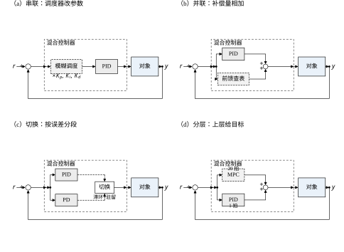
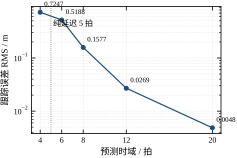
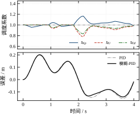
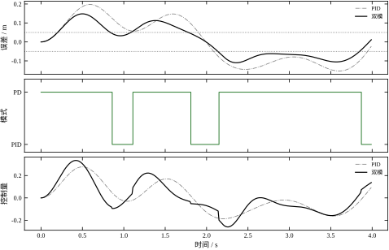
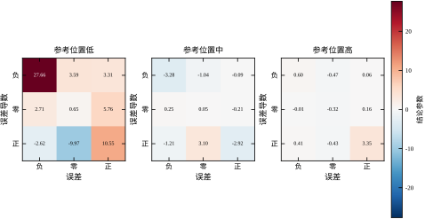
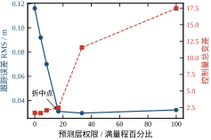
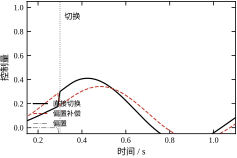
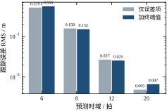
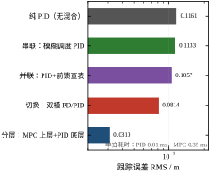

前面六章各讲了一种“新”控制器：模糊规则、神经网络、遗传整定、强化学习、迭代学习。每一章都尽量把机制讲透，也因此都面临同一个追问：既然第 44 章的 PID 只有三个参数、跑得又快又稳，为什么还要引入这些结构？第 66–71 章的回答是“单机制在某些工况下确实更好”，但那些更好往往是局部的：模糊规则改善了超调，神经网络拟合了非线性，强化学习学会了前馈形状，可它们各自的短板也同样明显——模糊规则靠人写、神经网络不保证稳定、强化学习要大量回合、迭代学习离不开重复轨迹。本章不再新增机制，只回答一个工程上更常见的问题：把这些机制装进同一个回路时，谁负责哪一段、彼此怎么交接、收益到底从哪来。
为了让“混合”与“不混合”能直接比较，本章继续用第 66–70 章那个算例：二阶非线性对象
y'' = -2y' + K(y)\,u,\qquad K(y) = 4 + 6y \tag{72-1}
工作区间 y\in[1.5,\,2.1] 内静态增益从 13 变到 20，接近 1.5 倍；采样周期 T_s=10 ms；执行到测量的纯延迟 5 拍；控制量限幅 \pm 1.2；参考轨迹是 4 s 一个来回的往复运动
r(t) = R_0 + A_1\bigl(1-\cos\omega t\bigr) + A_3\bigl(1-\cos 3\omega t\bigr) \tag{72-2}
其中 R_0=1.50、A_1=0.55、A_3=0.06、\omega=2\pi/4。每回合 400 拍，回合结束复位。基线固定增益 PID 取 (K_p,K_i,K_d)=(2.00,\,0.05,\,0.20)，与前面几章一字不差。这样做的代价是本章不能挑一个“对自己有利”的对象，好处是任何一句“比 PID 好多少”都能被读者拿前几章的数字复核。
在同一轨迹、同一限幅、同一延迟下，五种结构的跟踪误差 RMS 分别是：
| 结构 | 控制器 | RMS | 最大误差 | 控制量总变差 |
|---|---|---|---|---|
| 无混合 | 固定 PID | 0.1161 | 0.1974 | 1.708 |
| 串联 | 模糊调度 PID | 0.1133 | 0.2017 | 1.741 |
| 并联 | PID + 前馈查表 | 0.1057 | 0.1559 | 1.695 |
| 切换 | 双模 PD/PID | 0.0814 | 0.1482 | 2.281 |
| 分层 | MPC 上层 + PID 底层 | 0.0310 | 0.0639 | 2.462 |
| 单一机制 | 长时域 MPC | 0.0048 | 0.0127 | 1.569 |
这张表最容易被误读成“越复杂越好”。真实情况没有这么顺：串联的模糊调度只把误差从 0.1161 压到 0.1133，改善 2.4%，还不如把 PID 三个参数在网格上重搜一遍得到的 0.0854；而分层结构拿到 0.0310，靠的并不是“更聪明的智能算法”，而是把预测权限交给了一个会算未来的模块。换句话说，混合架构的收益主要来自“把某一段工作交给有能力做它的模块”，而不是来自“模块本身有多智能”。
按模块之间的连接关系，混合结构可以分成四类，图 72-1 把它们画在同一张图里。四个面板的外环完全一样（求和点、对象、反馈），只有虚线框内的部分不同，这样比较的才是结构而不是画法。

串联是把一个模块的输出接到另一个模块的输入端。最常见的是“调度器 + PID”：模糊系统不直接产生控制量，只根据误差与误差导数调整 PID 的三个增益，控制律仍然是 PID。这种做法保留了 PID 的积分作用与稳定性直觉，风险最小，收益也最小。
并联是两路同时工作、输出相加。一路通常是 PID，负责低频与稳态；另一路是补偿器，负责前馈、非线性补偿或相位超前。并联的关键不在两路各自多强，而在“补偿量是否可学”——本章会看到，把误差、误差导数塞进补偿网络，闭环反而比不加更差，因为网络把拟合误差变成了额外的反馈增益。
切换是按工况分段，同一时刻只有一个控制器在起作用。大误差段用高增益 PD 抢快速性，小误差段切回 PID 消静差，中间用滞环与最短驻留防抖。切换的难点从来不是“选哪个”，而是“切换瞬间输出跳多少”。
分层是上下两级：上层看得远、算得慢，负责给出目标或前馈；下层看得近、算得快，负责跟踪与抗扰。本章用 MPC 做上层、PID 做下层，两者通过一个限幅的“权限”接口相连。
如果混合只是“把 PID 换成一个神经网络”，结果会很糟。用 2 输入（误差、误差导数）、9 条规则的零阶 TSK 直接替代 PID，开环拟合的测试 RMSE 只有 0.0893，看起来不错；可一旦接进闭环，RMS 冲到 2.8701，控制量 30.2% 的拍数贴着限幅，最大误差 3.9078——系统已经失稳。原因不神秘：这个映射里没有积分状态，误差长期偏一点它就长期偏一点；而训练数据只覆盖了 PID 轨迹附近很窄的一条带，闭环一旦偏离，网络就在自己没见过的区域外推。
同一批数据，换成 3 输入（多一个参考位置）后闭环误差降到 0.1302；再把补偿量限制成“只依赖参考位置”的一维查表，闭环误差 0.1057，终于低于 PID。三组数字说明的是同一件事：混合架构的性能瓶颈通常在接口，而不在模块。输入选错了，参数再多也没用；接口选对了，9 个参数也能干活。这句话会贯穿本章后面的每一节。
在往下走之前，有三个说法需要先拆掉，因为它们几乎出现在每一次关于混合架构的讨论里，而且都会把设计带偏。
第一个误解是“混合等于更智能”。混合只改变分工，不改变每个模块的智力水平。本章的模糊-PID 用了 9 条规则、9 个参数，看起来比三个数的 PID“聪明”，可它只把误差从 0.1161 压到 0.1133。原因很简单：它做的事仍然是“用误差算控制量”，只是把常数换成了有界函数，信息的来源没有变。判断一个混合结构是否真的“更智能”，唯一的标准是“它有没有拿到别的模块拿不到的信息”，而不是“它用了什么算法”。
第二个误解是“模块越多越强”。本章有一组现成的反例：同样是 9 个参数，接 2 个输入（误差、误差导数）闭环失稳到 2.8701，只接 1 个输入（参考位置）却做到 0.1057。参数一样多，接法不同，结果差 27 倍。模块数量与性能之间没有单调关系，甚至常常相反——每多一个模块，就多一条可能出错的通道、多一个需要定契约的接口。
第三个误解是“有了智能模块就能自适应”。自适应需要两件事同时成立：模块的输入能反映工况变化，且它的有效区域真的被访问到。本章的调度表两条都只满足一半：输入里有误差与误差导数，能反映工况；但闭环实际只走到曲面的中心一小块（K_p 只在 0.955–1.164 之间活动），表上那些为“大误差”准备的格子从未被踩到。设计者以为自己在做增益调度，实际做的是一条几乎不变的增益曲线。
拆掉这三个误解之后，本章讨论的范围也就清楚了：这里的“混合”专指两个及以上各自具备独立控制律的模块装进同一个回路。传感器滤波、抗积分饱和、指令限速这些常规环节不算混合，它们是任何控制器都有的外围；而“PID 加一个前馈项”算不算，取决于前馈项是否有自己的参数与设计目标——本章把它算作最简单的并联混合。
72.2 把四种结构写成统一的数学形式，重点是“调度”“切换”“相加”“分层”这四个动作各自的表达式与约束；72.3 给出可照做的设计步骤，包括接口契约怎么写；72.4 与 72.5 分别在连续与离散两种视角下讨论延迟、采样与预测矩阵；72.6 讨论稳定性与性能，会给出“权限越大越不稳”的定量证据；72.7 逐个参数说明它动的是哪一段；72.8 给协同调参的顺序与经验；72.9 讨论终端值学习这类“给短时域打补丁”的做法为什么只在中等时域有效；72.10 讲工程落地，包括复杂度预算与模块间接口；72.11 给适用边界；72.12 是完整代码。
若只想记一句话：混合不是把多个控制器堆在一起，而是把不同性质的工作分给不同性质的模块，并为它们规定一个不会互相打架的接口。
把一个混合控制器拆开，本质上只有三样东西：一条反馈通道 u_{fb}、一条前馈通道 u_{ff}、一组可调或可学的参数 \theta。写成统一形式
u(k) = \Psi\bigl(u_{fb}(k),\, u_{ff}(k),\, \theta(x(k))\bigr) \tag{72-3}
差别全在 \Psi 上。而 \Psi 能做的事只有四种：让 \theta 随状态变（调度）、让两路相加（并联）、按条件选一路（切换）、把一路嵌进另一路（分层）。四种拓扑对应四种算子，这不是分类学的巧合，而是“两个模块的输出如何组合”这个问题只有这几种不破坏因果性的答案。下面逐个写出表达式，并指出每种组合在数学上新增了什么约束。
把两个模块记为 A 与 B，各自把状态映射成控制量。要让它们同时存在于一个因果回路里，输出只能这样合成：
u = B\bigl(A(x)\bigr),\qquad u = A(x)+B(x),\qquad u = \sigma(x)\,A(x)+\bigl[1-\sigma(x)\bigr]B(x),\qquad u = B\bigl(x;\ A(x)\bigr)
四式分别是复合、相加、条件选择、把一方的输出当作另一方的目标或约束。之所以没有第五种，是因为“两个函数的合成”在因果系统里只有代入、相加、选择、约束四种基本形式；任何更复杂的写法都可以展开成这四者的树。
这个视角有两个用处。第一，它给出了“复杂度”的一个可计算定义：树的深度。串联、并联、切换都是深度 1，只有一个接口；分层是深度 2——上层算目标、经由权限接口交给下层，两个接口串联。每多一层，就多一处需要单独验证的契约，也多一处可能出错的地方。本章后续所有关于“复杂度预算”的讨论，本质上都是在说“树的深度不要超过 2”。
第二，它解释了为什么“模糊混合”介于串联与并联之间。把上面第三式里的 \sigma 从 \{0,1\} 放松到 [0,1]，切换就变成了加权混合；若 \sigma 由模糊规则给出，它就是“模糊混合”，既有并联的连续性，又有切换的分段意图。本章没有采用这种结构，因为它把两种控制律的缺点也一起继承了：既需要两套控制器都在线，又需要额外设计 \sigma 的形状。
模糊-PID 的写法是
u = s_{Kp}(e,\dot e)\,K_p\,e \;+\; s_{Ki}(e,\dot e)\,K_i\!\int\! e\,dt \;+\; s_{Kd}(e,\dot e)\,K_d\,\dot e \tag{72-4}
三个调度系数各自是一张 3×3 规则表的输出。每条输入先归一化到 [-1,1] 的三个语言值（负、零、正），隶属度用三角函数
\boldsymbol\mu(x) = \Bigl[\max(-x,0),\;\; 1-|x|,\;\; \max(x,0)\Bigr],\qquad x\in[-1,1] \tag{72-5}
规则用乘积推理，去模糊用加权平均，于是调度系数是一个连续曲面
s(e,\dot e) = \frac{\sum_{i=1}^{9}\mu_i(e)\,\mu_j(\dot e)\,c_{ij}}{\sum_{i=1}^{9}\mu_i(e)\,\mu_j(\dot e)} \tag{72-6}
其中 c_{ij} 是第 (i,j) 条规则的结论。式 (72-6) 有两个性质值得记住：分母恒为正，所以曲面不会除零发散；结论是常数的加权平均，所以输出一定落在 \min c_{ij} 与 \max c_{ij} 之间，不可能超出人写的范围。这就是串联结构“风险最小”的数学原因——它没有新增任何动态，只是把三个常数换成了三个有界函数。本章的 K_p 表取
C_{Kp} = \begin{bmatrix} 1.30 & 1.15 & 1.00 \\ 1.15 & 1.00 & 0.95 \\ 1.00 & 0.95 & 0.85 \end{bmatrix} \tag{72-7}
（行对应 e 的负/零/正，列对应 \dot e 的负/零/正）。读法是“误差大且误差在扩大时把 K_p 放大到 1.3 倍，误差大但误差在收敛时收回到 0.85 倍”。K_i 表方向相反，误差大时压低积分防饱和；K_d 表在误差大且同向时略降，避免微分放大噪声。
双模控制不能写成一个静态映射，因为同一组 (e,\dot e) 在不同时刻可能对应不同模式。正确的写法是带记忆的状态转移：
\sigma(k) = \begin{cases} \text{PD}, & |e| > \theta_{th} + h \ \text{且驻留期满} \\ \text{PID}, & |e| < \theta_{th} - h \ \text{且驻留期满} \\ \sigma(k-1), & \text{其他} \end{cases} \tag{72-8}
h 是滞环半宽，驻留期是最短保持拍数。式 (72-8) 里两个机制各自解决一个问题：滞环消除阈值附近的反复穿越，驻留消除模式抖动带来的控制量抖动。切换瞬间的输出不连续量定义为
\Delta u = \bigl|u_B(k) - u_A(k)\bigr| \tag{72-9}
无扰切换的做法是在切换时刻记下偏置 b = u_A - u_B，此后输出 u_B + b。注意这只保证输出连续，不保证状态一致：B 的积分器仍然是它自己的历史，偏置会一直挂在输出上，直到被积分作用慢慢吸收。72.8 节会给出实测——本章算例里直接切换的跳变是 0.1171，偏置补偿把跳变压到 0，但切换后 0.3 s 内的最大误差反而从 0.1674 升到 0.1875。所以“无扰”是一个局部性质，不等于“更好”。
并联结构的表达式最简单
u = u_{PID} + \operatorname{sat}\bigl(u_{net},\,\pm R\bigr) \tag{72-10}
\operatorname{sat} 是逐拍的硬限幅。这一项看起来只是安全措施，实际上是并联结构能否成立的前提：补偿网络在训练分布之外可能给出任意大的输出，若不加限幅，一次外推就能把执行器推到饱和，而饱和又会让误差变大、把网络推得更远。限幅把“网络犯错”的后果从“系统失稳”降级为“这一拍少补一点”。
把式 (72-6) 的结论从常数换成“每条规则一个常数、规则数等于输入组合数”，就是零阶 TSK：
u = \sum_{i=1}^{M}\psi_i(x)\,\theta_i,\qquad \psi_i = \frac{\exp\!\bigl(-\|x-c_i\|^2/2\sigma^2\bigr)}{\sum_{j}\exp\!\bigl(-\|x-c_j\|^2/2\sigma^2\bigr)} \tag{72-11}
n 个输入、每维 3 个中心时 M=3^n：2 输入 9 条规则 9 个参数，3 输入 27 条规则 27 个参数。前提参数（中心 c_i、宽度 \sigma）固定，结论参数 \theta 由最小二乘一次解出，所以“训练”没有随机性、没有学习率、没有回合数——它退化成一次线性回归。这一点很重要：本章所有神经-模糊的结果都可以被读者用同一份数据复算，不存在“调了种子才好看”的空间。
代价也在这里。式 (72-11) 是一个静态映射，输入里没有积分状态，所以它天生没有消静差的能力；输入里没有参考相位，它就学不到前馈。72.1 节那条 2.8701 的失稳曲线，就是这两件事同时发生的后果。
分层结构里，上层解一个有限时域优化
\min_{U}\ J = \sum_{i=1}^{N_p}\bigl(\hat y_{k+i}-r_{k+i}\bigr)^2 + \lambda_u\sum_{j} u_j^2 + \lambda_d\sum_{j}\bigl(\Delta u_j\bigr)^2 \tag{72-12}
预测用“自由响应 + 脉冲矩阵”写成线性形式
\hat{\mathbf y} = \mathbf y_{free} + G\,\mathbf U \tag{72-13}
G 的第 (i,j) 元是第 j 个控制块对第 i 拍输出的贡献，块内指令在第 i-(d-1) 拍生效（d 为延迟拍数）。下层不做优化，只按权限相加：
u = u_{PID} + \operatorname{sat}\bigl(u_{MPC},\,\pm R\bigr) \tag{72-14}
R 是本章最值得盯住的一个量。R=0 时式 (72-14) 退化成纯 PID；R 等于满量程时退化成纯 MPC。中间每一个取值都是一种“分工方案”，而 72.7 节会看到，R 从 0 加到 0.20 时误差从 0.1161 掉到 0.0310，从 0.20 再加到 0.40 时误差几乎不变（0.0295），总变差却从 2.462 涨到 11.556。权限不是越大越好，它有一个明显的拐点。
四种接法可以画成四张框图，但框图不是一种能计算的东西。本章选择先写成一个统一的算子形式，再让四种接法成为它的特例，原因有三个。
第一，框图看不出“谁是主人”。两张框图连线一样，可能一张是串级、一张是前馈，差别只在“内环的设定值从哪来”。写成算子之后，这个差别变成 \Psi 的一个分量取 u_1 还是取 r，是一行可以核对的东西。
第二，框图不能直接算复杂度。本章把复杂度定义成“算子树的深度”，是因为深度决定了串行环节的数量，而串行环节的数量直接对应单拍耗时；并联的两个分支可以并发，深度不增加。这个定义粗糙，但它可算，而且与实测的耗时排序一致：PID 0.014 ms、模糊调度 0.061 ms、分层 0.345 ms，正好对应深度一到三。
第三，框图无法承接“接口契约”。接口是数学对象——输入的物理量、量纲、有效区间、失效时的取值；把这些写进 \Psi 的每个分量，才能谈“两个模块能不能接”。本章 72.3 节那张五行的接口表，本质上是在给算子树的每条边标注定义域。
一句话：框图用来讲给人听，算子用来讲给机器和测试听。本章两种都画，但凡是需要推理的地方，都回到算子形式。
把上面五组式子放在一起，能看出混合结构绕不开的三条约束。第一，任何组合都不能引入新的不稳定极点：串联靠有界调度系数保证，并联靠限幅保证，切换靠滞环与驻留保证，分层靠权限 R 保证。第二，组合后的闭环带宽由最慢的一段决定：上层 20 拍预测配下层 1 拍 PID，整体响应不会比 20 拍更快，这也是为什么分层结构的误差曲线比纯 MPC 粗糙。第三，组合不创造信息：如果某个模块的输入里没有相位，它就不可能输出正确的前馈，无论参数有多少。第三条是本章后面反复出现的判据。
在进入设计步骤之前，还要把“参数个数”与“自由度”分开。参数个数是控制器里可调的数的总数，自由度是“真正能改变闭环行为的独立方向数”。两者在单控制器里几乎相等——PID 三个参数对应三个方向；在混合结构里却差得很远，因为接口会引入强相关：调度系数乘在增益上，改动中心与改动范围对闭环的影响是同向的；TSK 的 27 个结论里，边缘格子的权重接近零，改它们几乎不影响输出。
本章大致是这样：对外可见约 40 个参数，其中真正被反复激励的，是调度表中心附近的几个格子、TSK 里被样本覆盖的十来个结论、以及 6 个接口参数。其余参数只在极端工况下才起作用——它们不增加稳态性能，只增加验证负担。这也是 72.10 节那条“每增加十个参数就多一个验证工况”的由来：参数个数的代价主要不在计算，而在验证。计算上 40 个参数与 3 个参数都是几次乘加，差别可以忽略；验证上，40 个参数需要覆盖的组合数比 3 个参数多几个数量级。
在写任何代码之前，先做一次“症状归因”。同一个误差表现，可能只需要调一个参数，也可能必须换结构；如果归因错了，后面五步全是白做。下面这张表是本章建议的对照。
| 症状 | 最可能的原因 | 先试什么 | 需要混合吗 |
|---|---|---|---|
| 稳态有恒定偏差 | 积分增益不足或积分饱和 | 调 K_i、加抗饱和 | 不需要 |
| 换向时明显滞后 | 延迟造成的相位损失 | 前馈或预测 | 需要 |
| 大幅超调、小幅很好 | 增益随工况变化 | 增益调度 | 需要 |
| 不同工况表现差别大 | 单一增益无法兼顾 | 调度或切换 | 需要 |
| 误差与轨迹重复性强相关 | 存在可学习的前馈形状 | 迭代学习 | 需要 |
| 误差主要由随机扰动决定 | 反馈带宽不足 | 提高增益、加观测器 | 不需要 |
表里“不需要”的两行最容易被忽略。稳态偏差与随机扰动都是反馈本身能处理的事，加一个智能模块只会让问题从“参数没调好”变成“两个模块都没调好”。本章算例的基线 PID 在标称工况下饱和率为 0、误差 0.1161，属于“能用但不够好”，这时才轮到混合结构出场。
归因之后还要问三个问题：现有控制器离物理极限有多远（本章是 0.1161 对 0.0293，差四倍，有空间）；误差里有没有可预测的分量（有，参考完全已知）；团队能不能维护多出来的参数（这决定了参数预算）。三个问题里任何一个答“不能”，都应该停在第零步。
混合架构最常见的失败不是模块不好，而是两个模块抢同一件事。让模糊调度和神经网络都去补前馈，结果是一条通道被补两遍；让 PD 和 PID 都带积分，切换时两个积分器各自累积，一切换就打架。所以设计的第一步不是写代码，而是列一张“任务—模块”对照表，把每项工作唯一地指派给一个模块。
本章算例的任务可以切成四段：稳态消差、快速段抢时间、相位超前（前馈）、约束下的多步预测。切完之后指派关系就清楚了：稳态消差只能给带积分的模块（PID 或模糊-PID），抢时间给高增益 PD，前馈给能看到参考相位的模块，多步预测给 MPC。任何一个模块如果被指派了两件事，就要检查它有没有能力同时做好；如果没有，宁可拆开。
接口不是“函数签名”，而是四条必须写下来的约定：输入是什么、输出的量纲与限幅、更新周期、失效时的降级值。本章四个模块的接口如下。
| 模块 | 输入 | 输出 | 周期 | 失效降级 |
|---|---|---|---|---|
| 模糊调度 | 归一化 e、\dot e | 三个系数，[0.6,1.3] | 1 拍 | 全部置 1.0 |
| 双模逻辑 | 归一化 \lvert e\rvert | 模式标志 | 1 拍 | 保持 PID |
| 前馈查表 | 归一化参考位置 | 补偿量，\pm0.40 | 1 拍 | 输出 0 |
| MPC 上层 | 状态、参考序列 | 预测增量，\pm R | 1 拍 | 输出 0 |
“失效降级”这一列最容易被忽略，却决定了系统在异常时是“性能下降”还是“直接失控”。本章所有降级值都取“退化成纯 PID”——因为纯 PID 在本算例里饱和率为 0、误差 0.1161，是一个已知安全的兜底。工程上这条经验可以推广：任何一个智能模块的失效默认值，都应当让系统退化成一个你愿意单独交付的控制器。
四种算子里选哪一个，有两个判据。第一个是“要不要记忆”：调度与并联是无记忆的代数运算，切换与分层带状态。第二个是“输出要不要连续”：切换在原理上不连续，必须额外加滞环或偏置；其余三种天然连续。
具体到本章：如果只是想让 PID 在大小误差段表现不同，但又不希望出现模式跳变，用调度而不是切换——代价是调度只能连续地改变增益，做不出“大误差段完全冻结积分”这种硬逻辑。反之，如果确实需要“某段完全不用积分”，就只能用切换，并且必须接受滞环与驻留带来的参数。本章的双模结果说明这个代价是值得的：0.0814 对 0.1133，改善 28%。
凡是“两路相加”的结构，都有一路是主角、一路是配角，配角能拿多少权限必须由小到大试出来，而不是一次给满。本章把权限 R 从 0 扫到 1.20（满量程），六组结果如下。
| 权限 R | RMS | 最大误差 | 总变差 |
|---|---|---|---|
| 0.00 | 0.1161 | 0.1974 | 1.708 |
| 0.05 | 0.0920 | 0.1632 | 1.658 |
| 0.10 | 0.0701 | 0.1292 | 2.074 |
| 0.20 | 0.0310 | 0.0639 | 2.462 |
| 0.40 | 0.0295 | 0.0655 | 11.556 |
| 1.20 | 0.0321 | 0.0787 | 17.462 |
从 0 到 0.20，误差降了 73%，总变差只涨了 44%，这一段是“净赚”；从 0.20 到 0.40，误差只降 4.8%，总变差却涨了 4.7 倍；再往上，误差反而回升。所以本章的经验规则是：当权限再放大一倍、RMS 改善不足 5%、而总变差翻倍时，就停在上一档。这条规则不需要知道对象模型，只需要两次实验，工程上很好执行。
混合结构里的新参数应当围绕一个已验证的旧值展开，而不是从零重搜。本章的做法是：
这四组数字都不是最优值，但都是“不会出事”的值。调参的顺序应当是先让系统在这组值上稳定运行，再逐个优化，而不是一上来就做多维搜索——本章 72.8 节会给出为什么。
结构搭好之后，至少验三件事：切换或限幅处有没有跳变、饱和率是不是 0、单拍计算占周期多少。本章的数字分别是：直接切换跳变 0.1171（加偏置后为 0）、所有结构饱和率均为 0%、MPC 单拍 0.352 ms 占 10 ms 周期的 3.5%。三项里任何一项不达标，都说明结构还没到可以上机的地步——不是参数没调好，而是分工没分对。
把上面六步压成一张表，就是本章建议的检查顺序。它不保证得到最好的控制器，但能保证不出现“两个模块抢一件事”“权限给满导致抖动”“失效后无处可退”这三类最常见的事故。
| 步骤 | 要回答的问题 | 本章取值 |
|---|---|---|
| 分工 | 每项工作是否只有一个模块负责 | 四段任务四个模块 |
| 契约 | 输入、量纲、周期、降级是否写清 | 见 72.3 节接口表 |
| 算子 | 是否需要记忆、输出是否连续 | 调度/并联/切换/分层 |
| 权限 | 配角最大能拿多少 | 0.20（拐点） |
| 初值 | 是否围绕已验证的旧值 | 系数 1.0、阈值 0.05 |
| 验收 | 跳变、饱和、耗时 | 0 / 0% / 3.5% |
把回路画成频域，混合结构要回答的问题就变得很直观：低频段谁负责、中频段谁负责、高频段谁负责。本章算例的三个频段很清楚。参考轨迹主频 0.25 Hz（周期 4 s），三次谐波 0.75 Hz；对象是一个带宽约 2 rad/s 的二阶惯性；执行到测量的纯延迟 50 ms。
延迟在频域里是纯相位滞后 -\omega T_d。把三个频点代进去：主频 \omega=1.571 rad/s 对应滞后 0.0785 rad，即 4.5°；三次谐波 \omega=4.712 对应 0.2356 rad，即 13.5°。这两个数字说明，本章的延迟不是靠牺牲带宽换来的相位裕度去硬扛，而是靠“提前知道参考要去哪”去补。这一点决定了四种结构的天然分工：反馈管不了 13.5° 的滞后，前馈与预测可以。
模糊调度把三个常数换成三个有界函数，闭环就成了线性变参数系统。它能不能用线性工具分析，取决于一个准静态假设：调度参数的变化速度远慢于闭环自身的动态。本章的调度输入是误差与误差导数，误差导数经过 30 ms 低通，闭环主时间常数约 0.2 s，两者相差近一个数量级，假设基本成立；如果调度直接吃测量噪声，这个假设立刻失效，闭环会出现“参数随噪声跳”的怪现象。
图 72-2 是三个调度系数在归一化 (e,\dot e) 平面上的取值。三张图的形状不一样，正好说明三张规则表各自在管一件事：K_p 曲面在“误差大且同向”的角上最高（1.30），在“误差大但反向”的角上最低（0.850）；K_i 曲面方向相反，误差大时压到 0.600；K_d 曲面最平，只在同向大误差时降到 0.700。
四个代表点的数值可以拿来核对曲面是否被正确实现：
| 工作点 | s_{Kp} | s_{Ki} | s_{Kd} |
|---|---|---|---|
| e 大、\dot e 同向 | 0.850 | 1.100 | 0.900 |
| e 大、\dot e 反向 | 1.000 | 1.000 | 1.000 |
| e 小、\dot e 小 | 0.990 | 1.001 | 0.999 |
| e 大、\dot e 为零 | 0.950 | 1.000 | 1.000 |
第一行值得多想一秒：误差大且还在扩大，直觉上应该加大 K_p 猛拉，这张表却把 K_p 压到 0.850、把 K_i 抬到 1.100。原因是本算例的执行器限幅只有 \pm1.2，误差大时真正稀缺的不是增益而是“别把执行器顶死”；抬积分是为了在顶死期间仍然积累恢复力。这张表是人按经验写的，它体现的是限幅约束下的取舍，而不是“误差大就加大增益”的教科书口号。换一个不限幅的对象，这张表的方向就要改。
连续域里还能读出一件事：调度范围只有 [0.85,\,1.30]，最坏情况下闭环增益变化不到 1.5 倍，与对象自身 K(y) 从 13 变到 20 的 1.5 倍同量级。换句话说，模糊调度并没有“抵消”非线性，它只是把增益变化的方向调得对了一点。这也解释了 72.1 节那个 2.4% 的改善幅度——调度能做的只是“让固定增益在全程都不太差”，它不可能让固定增益变成自适应增益。
理想的双模切换在连续域里是一个继电器：|e| 穿过阈值就换控制律，切换频率理论上可以无穷高。实际系统里限制它的是两件事——执行器的带宽与采样周期。本章加了两个装置：滞环半宽 h 与最短驻留。滞环把“穿越一次就切”改成“必须穿过 2h 才切”，于是最小切换间隔约为 2h/|\dot e|；取 h=0.005、|\dot e|\approx0.5，得到 20 ms，也就是 2 拍。驻留期则直接规定“切换后至少保持 n_d 拍”。
实测结果支持这个估算：4 s 内切换次数从无滞环时的 7 次降到加 20 拍驻留后的 5 次，RMS 从 0.0819 微降到 0.0814，总变差从 2.315 降到 2.281。滞环从 0 加到 0.010 时误差反而略升（0.0819→0.0827），因为滞环让“该切的时候晚切了一点”。这条曲线很平，说明在本算例里切换本身并不频繁，抖振不是主要矛盾；真正决定精度的是高增益 PD 段的 K_p 取多大，72.8 节会给出网格。
连续域里，理想前馈可以直接写出来。对式 (72-1) 求导两次并代入参考轨迹，得
u^{*}(t) = \frac{r''(t) + 2r'(t)}{K\bigl(r(t)\bigr)} \tag{72-15}
量级估一下：r' 的幅值是 A_1\omega=0.864，r'' 的幅值是 A_1\omega^2=1.357，两者相加除以 K\approx16，得到 u^* 的幅值约 0.13，只占执行器满量程的 11%。这就是前馈的尴尬之处：它能消掉的误差有限，但它消的是“反馈永远追不上”的那部分——相位滞后。本章把 u^* 单独加在开环对象上，跟踪 RMS 是 0.0293；而纯反馈 PID 是 0.1161。前馈一个人干的活，比 PID 好四倍。
但也别急着下结论。0.0293 是在“模型完全已知、没有任何扰动”的前提下拿到的；一旦 K(y) 估错 20%，前馈就会把误差按比例放大，而反馈不会。所以并联结构的正确用法不是“用前馈替代反馈”，而是“用前馈消掉可预测的部分，把反馈留给不可预测的部分”。本章的并联结果 0.1057 之所以只比 PID 好 9%，就是因为学出来的前馈只复现了 u^* 的 79%，剩下 21% 的拟合误差又通过反馈绕了回来。
式 (72-15) 给的是精确前馈，理论上应该 100% 加进去，实际工程里几乎没人这么做，通常只加 70%–90%。原因不在保守，而在误差的传播方式。
设实际模型增益是 \hat K，真实增益是 K，前馈按 \hat K 算，则执行器上多出的一项正比于 (K/\hat K-1)。这一项不进反馈回路，没有任何机制能消掉它，它直接叠加在输出上。若前馈取满、模型又高估了 20%，这一项的幅值约等于 0.2\times0.13=0.026，看起来不大；但它与参考同频，会在每一拍的同一相位重复出现，等价于一个持续的周期性扰动，积分器只能把它平均掉一部分。
取 80% 的好处是把这一项压到 0.021，同时只损失 20% 的相位补偿。更重要的好处是留出了一条可观测的残差：前馈没补完的部分会体现在误差里，反馈据此还能判断模型偏了多少；如果前馈取满，误差被压到接近零，反馈就失去了“看见模型错误”的能力，这在工程上叫“把诊断信号调没了”。
本章的并联结构在这一点上有个直接的证据：前馈只覆盖了 79% 的 u^*，于是闭环从纯 PID 的 0.1161 降到 0.1057；而开环单独加满前馈是 0.0293。两者的差距说明，闭环里的前馈并没有按开环那样工作——它被反馈“抵消”了一部分，因为反馈看到误差变小就少出力，一增一减之间，前馈的有效贡献被摊薄。这不是设计缺陷，而是所有并联结构的共性：并联两条通道的贡献不能简单相加，它们通过误差互相耦合。
这条耦合还解释了为什么并联结构的参数最难调。串联与切换的模块是“接力”关系，一个模块的输出直接成为另一个的输入，因果关系是单向的；并联是“合力”关系，两条通道同时看误差，任一条变动都会改变另一条的工作点。调并联结构的正确顺序是先把反馈那条定死，再单调前馈，最后联合微调——反过来做，每次改前馈都会让已经调好的反馈失准。
“谁不做”这条原则里最重要的一条，是积分只能有一个主人。积分的作用是记住历史误差，两个模块各记一份，等于把积分增益乘了二；更糟的是切换时两份积分各自累积，切过去的一瞬间两份叠加，输出会突然多出一块。
本章的双模结构刻意让 PD 半边完全没有积分：高增益段只负责抢时间，消静差仍然交给切回来的 PID。这样全回路只有一个积分器，切换时不需要迁移任何状态，只需要决定“这一拍用哪一路”。代价是高增益段在稳态附近不能单独工作，所以阈值必须让它在误差还大时就退出——这也是阈值取 0.05 而不是 0.01 的原因之一。
分层结构里这件事更隐蔽。PID 有显式积分，而 MPC 的增量惩罚 \lambda_d\sum(\Delta u)^2 实际上提供了一种“软积分”：它惩罚控制量的变化，等价于让控制量缓慢逼近某个稳态值。两种积分叠加，等效积分增益会随权限 R 增大而上升。72.6 节看到 R 超过 0.20 后总变差暴涨、误差不降，除了高频锯齿之外，这条叠加也是一个可能的原因。工程上的处理办法有两条：要么把下层的积分在 R 大时减弱，要么把上层的 \lambda_d 调大以削弱它的积分特性。两条都指向同一个结论——权限 R 不只是“分多少活”，它还改变了闭环的积分结构。
并联结构反而最容易处理：补偿网络如果只依赖参考位置（本章的 0.1057 那一档），它天然没有积分记忆，与 PID 的积分不冲突；一旦把误差也喂进去，网络就带上了“隐式记忆”，冲突立刻出现——这也是那一档总变差 5.208 的另一半解释。
把式 (72-12) 的时域拉长到无穷，它就退化成 LQR；时域有限时，它比 LQR 多了一个“看得见未来参考”的能力。连续域的直觉是：MPC 用一个内部模型把未来 N_p 拍的响应算出来，再把“哪一段该出力”分配给当前这一拍。它比 PID 强的地方不在反馈增益，而在它知道 5 拍之后指令才生效——这正是纯反馈做不到的。
把上面的分析整理成表，就是本章对“谁负责哪一段”的完整回答。
| 频段 | 频率 | 主要成分 | 谁负责 | 本章证据 |
|---|---|---|---|---|
| 极低频 | <0.1 Hz | 稳态偏置 | 积分 | PID 已能做到零静差 |
| 基频 | 0.25 Hz | 主往复运动 | 前馈或预测 | 纯前馈开环 0.0293 |
| 三次谐波 | 0.75 Hz | 换向细节 | 只能靠前馈 | 反馈在此处增益不足 |
| 高频 | >5 Hz | 测量噪声 | 滤波，不再出力 | 1 mV 噪声下 0.1162 |
第二、三行的差别值得展开。对象带宽约 2 rad/s，也就是 0.32 Hz；三次谐波在 4.71 rad/s，按二阶惯性估算，幅值衰减约 (0.32/0.75)^2\approx0.18，即 -15 dB。反馈要在这个频率上产生足够的修正，就得把环路增益提高 5.5 倍；而提高增益的同时，延迟带来的 13.5° 与对象自身的相位滞后会一起吃掉落相位裕度。所以反馈在三次谐波上不是“不想管”，是“管不动”。
前馈则不受这个限制。它把 u^{*} 直接加到执行器，不经过反馈回路，也就不受相位裕度约束；它的精度只取决于模型对不对。这就是 72.1 节那张表里“并联前馈”的最大误差（0.1559）比纯 PID（0.1974）低、而 RMS 只低 9% 的原因：它在高次谐波上确实起了作用（最大误差降了 21%），但主频段的误差本来就由积分与增益决定，前馈帮不上太多，两者一平均就只有 9%。
这张表还有一个前提必须说清：它假设参考是已知且可预测的。若参考变成随机信号，“基频/谐波”的划分就失去意义，前馈也无从计算，此时频段表塌缩成“低频靠积分、高频靠滤波”两行，混合结构的收益也随之消失。这也是 72.11 节那条“先给误差归因”的由来——频段表本身就是一种归因。
第一，延迟造成的相位滞后随频率线性增长，主频 4.5°、三次谐波 13.5°，所以补偿要针对谐波而不是基频。第二，任何调度或切换的快慢都必须与闭环时间常数拉开差距，否则准静态假设失效。第三，前馈通道的量级通常只占满量程的百分之十几，它的价值在相位而不在幅值，因此不能用“前馈加了多少”来衡量它的贡献，要看“误差的哪一部分消失了”。
连续域的三条判据到了离散域都要重算一遍，而且不是“加个 T_s 修正”那种重算。采样做的是三件结构性的事：把连续时间切成 10 ms 一格，于是所有“提前量”只能是整数拍；把 50 ms 延迟折成 5 拍，于是相位滞后在闭环里以整拍形式出现；把控制时域切成块，于是“未来能改几次数”变成一个显式的整数。这三件事都不能靠更细的采样消除——采样再细，延迟对应的拍数只会变大，不会消失。
本章取 T_s=10 ms，与第 66–70 章一致。对象最快的动态是式 (72-1) 里那个 -2y'，时间常数 0.5 s，10 ms 采样相当于每 50 个点描一条 0.5 s 的曲线，够用；而 5 拍延迟给出一个粗略的带宽上限：闭环带宽大约不超过 1/(10\,d\,T_s)，即 2 Hz，恰好覆盖参考的三次谐波 0.75 Hz。这条经验式不严格，但它能在选采样周期时快速判断“这套结构有没有可能跟上参考”。
取 x=[y,\ y']^{\mathsf T}，对式 (72-1) 做前向欧拉离散，并把延迟显式写成 d 拍：
x_{k+1} = \Phi x_k + \Gamma(y_k)\,u_{k-d},\qquad \Phi=\begin{bmatrix}1&T_s\\0&1-2T_s\end{bmatrix},\quad \Gamma(y)=\begin{bmatrix}0\\T_s K(y)\end{bmatrix} \tag{72-16}
T_s=0.01 时 \Phi 的非对角元只有 0.01，1-2T_s=0.98，离散是良态的；欧拉解与精确解的相对差约 (2T_s)^2/2\approx2\times10^{-4}，远在本章关心的误差量级（10^{-2}）之下。换一个刚性对象（例如电流环，时间常数 0.1 ms）就不能这么做，必须用零阶保持的精确离散。这里特意点出来，是因为混合架构里最常见的实现错误之一，就是上层优化器的模型周期与下层实际采样周期写成两个值，结果预测永远差半拍，而波形上看不出毛病，只觉得“上层好像没起作用”。
还要注意 \Gamma 依赖 y_k：对象是非线性的，方程却是“每一步线性”的。这正是混合架构存在的前提——对象若本来线性，一个 PID 就够了；正因为它每步线性、整体非线性，才有“用模型算下一步、用反馈兜住长期偏差”这种分工。
上层要算未来 N_p 拍的输出，最直接的做法是把式 (72-16) 迭代 N_p 次。工程上更常用的是写成一次矩阵乘法，即式 (72-13) 里的 G：
G_{ij}=\sum_{m=n_j}^{\min(n_{j+1}-1,\ i-d)} C\Phi^{\,i-d-m}\Gamma,\qquad C=[1\ \ 0] \tag{72-17}
n_j 是第 j 个控制块的起始拍，块内各拍取同一个指令。求和上限里的 i-d 含义很直白：第 i 拍的输出，最早只能被第 i-d 拍及之前的控制量影响。i-d<m 的项根本不存在，于是 G 的左下角是一个由延迟撑起来的零三角，宽度就是延迟拍数，形状一眼能看出来。
G 必须自检。做法只有三行：随便给一组 \mathbf U，一边算 G\mathbf U，一边用式 (72-16) 逐步迭代，两者相减。本章的自检偏差是 2.22\times10^{-16}，即双精度浮点的舍入极限。这个检查看起来多余，但 G 写错时程序不会报错，只会让控制器“看不见自己的动作”，症状是控制量缓慢漂移、误差长期偏大，很难从波形反推到矩阵。三行代码换掉一类难查的故障，是划算的。
N_p 是混合架构里第一个必须显式选定的整数。图 72-6 是同一控制器（N_u=2、\lambda_u=\lambda_d=0.02）在五档预测时域下的闭环结果，纵轴取对数。

| N_p | 4 | 6 | 8 | 12 | 20 |
|---|---|---|---|---|---|
| RMS | 0.7247 | 0.5188 | 0.1577 | 0.0269 | 0.0048 |
| 最大误差 | 1.2200 | 0.8102 | 0.3040 | 0.0771 | 0.0127 |
| 总变差 | 0.000 | 0.309 | 1.009 | 2.034 | 1.569 |
第三行最后那个 0.000 是本章最干净的一条证据：N_p=4 小于延迟 5 拍，G 的每一列都落在零三角里，优化器无论怎么改 \mathbf U 都算不出预测输出的变化，梯度恒为零，控制量一动不动，输出停在初值上——最大误差 1.2200 恰好顶到限幅 \pm1.2，RMS 0.7247 就是“什么都不做”的误差。这不是参数没调好，是信息在结构上根本不存在。
N_p=6 只比延迟多一拍，G 每列只有一个非零元，于是能动，但只能动一次，总变差 0.309；N_p=8 越过延迟 3 拍，误差掉到 0.1577；到 N_p=12 是 0.0269，比纯 PID 好四倍多。曲线在 N_p\approx d+4 之后明显变平，这与“预测至少要覆盖一个建立过程”的经验吻合：5 拍延迟加 3 拍建立起落，正好是 8。
单拍耗时随 N_p 增长很慢，五档都在 0.30–0.38 ms 之间。原因是求解器用投影梯度，每步只做一次 G^{\mathsf T} 乘，计算量随时域线性增长；10 ms 周期里 0.38 ms 只占 3.8%，乘一个安全系数也放得下。这一条决定了本章后面敢把 N_p 取到 20。
d 是唯一一个“必须量、不能调”的结构参数。本章它等于 5，与真实值一致；若模型写 5 而实际是 8，72.6 节那张鲁棒性表给出了代价：MPC(N_p=20) 从 0.0048 退化到 0.0538，十一倍；MPC(12) 加学习更糟，从 0.0644 退化到 0.1711。
把 11 倍摊到 3 拍误差上，每错一拍大约让误差乘 2.2。这个倍数不是普适常数，但它说明了一件事：延迟误差的影响是指数的，不是线性的。原因在于脉冲矩阵的零三角宽度直接由 d 决定，d 错了，整个 G 的形状就错了，而不只是“晚一点”。
错的方向也有讲究。模型延迟偏小，控制器以为指令会更早生效，于是补偿不足且永远慢半拍；偏大则相反，控制器以为要等更久，于是提前加力，表现为超调。两种错法都坏，但第一种更常见——因为工程上量延迟时容易漏掉执行器自身的响应时间。稳妥的做法是取“偏大”的一侧：宁可多等一拍，也不要少等一拍。这一条与增益整定的直觉相反，值得单独记住。
控制时域 N_u 是第二个整数。块边界按
n_j = \left\lfloor \frac{(j-1)N_p}{N_u}\right\rfloor,\qquad j=1,\dots,N_u+1 \tag{72-18}
均匀划分，块内指令保持不变。N_u=N_p 时每拍都能改，自由度最大；N_u=1 时整个时域只有一个数，退化成“算一个常数前馈”。本章取 N_u=2，理由是：延迟 5 拍意味着前 5 拍的指令无论如何追不上，把它们拆开没有意义；真正需要区分的是“延迟段过去之后立刻该出多大力”与“稳态该出多大力”两件事，两块正好对应。
分块还有个副作用值得说：它相当于隐式正则化。自由度少了，代价函数里 \lambda_d 的作用被削弱，参数之间不容易打架。反过来，若坚持 N_u=N_p，就必须把 \lambda_d 调大，否则逐拍的解会在相邻拍之间来回跳，总变差飙升。本章 N_p=20、N_u=2 时总变差 1.569，反而比 N_p=12 的 2.034 低，说明分块确实压住了抖动。
模糊调度每拍要算一次 \dot e，离散域里只能用后向差分
\dot e_k = \frac{e_k-e_{k-1}}{T_s} \tag{72-19}
T_s=0.01 意味着 1/T_s=100，测量噪声被放大一百倍。本章仿真里加了 1 mV 噪声，直接差分会得到 0.1 量级的 \dot e 抖动，足以让调度系数每拍乱跳。所以 \dot e 进规则表之前先过时间常数 \tau=30 ms 的一阶低通：
\dot e^{f}_k = \dot e^{f}_{k-1} + \frac{T_s}{\tau+T_s}\bigl(\dot e_k-\dot e^{f}_{k-1}\bigr) \tag{72-20}
30 ms 不是随手取的：它必须明显小于延迟 50 ms，否则滤波本身变成新的滞后环节，72.4 节的准静态假设就破了；又必须明显大于采样周期 10 ms，否则滤不掉噪声。\tau\in[2T_s,\ dT_s/2] 是一个可以照抄的区间。
计算量上，离散实现把连续域里“一张曲面”变成每拍九次乘加的查表：模糊调度 0.061 ms/拍、9 条规则的 TSK 0.037 ms/拍、27 条 0.050 ms/拍，都在 10 ms 周期的 1% 以内。这也是本章敢在嵌入式目标上同时开调度与前馈的原因——两个加起来还不到 0.1 ms，而同样周期下 MPC 要 0.35 ms 左右。
T_s 在混合结构里是第一个要定的数，因为延迟拍数、预测时域、微分滤波全都由它派生。定它有三个约束，两边夹出一个区间。
下界来自计算。本章最重的模块是 MPC，单拍 0.345 ms；留三倍余量，周期不能短于 1 ms。这条下界在纯 PID 系统里几乎不存在（0.014 ms），但一旦引入预测层，它就变成硬约束——超时的后果不是变慢，是丢拍。
上界来自两件事。第一，采样必须明显快于对象最快的动态：本章时间常数 0.5 s，按每时间常数至少十个采样点，T_s\le50 ms。第二，采样必须明显快于延迟：延迟 50 ms，若 T_s=10 ms 则延迟 5 拍，量化误差半拍即 10%；若 T_s=50 ms，延迟只有 1 拍，量化误差 50%，预测层完全失效。两条合起来给出 T_s\le10 ms。
本章取 10 ms，正好压在上界上。这不是巧合，而是权衡的结果：再往下取 5 ms，延迟变 10 拍、量化误差降到 5%，但 MPC 的计算占比从 3.45% 涨到 6.9%，而误差几乎不变——因为延迟本身是物理的，采样再细也不能让它变小，只能让“对它的估计”更准一点。本章的模型是精确的，不需要更准的估计，所以 10 ms 是最省算力的选择；若延迟未知或时变，把 T_s 减半就是值得的。
离散 MPC 的参数里，N_p、N_u、\lambda_u、\lambda_d 经常被混为一谈，其实它们各管一件事，混着调就会互相抵消。
N_p 管“看得多远”，它决定控制器能不能预见延迟与换向。这是唯一一个“改一个整数换一个数量级”的参数：4 到 20，RMS 从 0.7247 到 0.0048。它的下界由延迟定（必须越过 d），上界由模型可信度定——预测得越远，模型误差的累积越多，所以 N_p 不是越大越好，而是“刚好覆盖到参考的下一个转折点”最好。
N_u 管“能改几次”，它决定控制量的自由度。N_u 小等于强迫控制量在一段时间内保持恒定，这带来抗噪（控制量不会追着噪声抖），但也带来钝感。本章取 N_u=2，把 20 拍切成两大块，是为了配合“延迟 5 拍 + 参考半周期 200 拍”这个尺度：块太细等于没有约束，块太粗等于只做一次阶跃。
\lambda_u 惩罚控制量的绝对值，\lambda_d 惩罚它的变化量。前者相当于在目标里加了一个弹簧把 u 拉向零，容易引入稳态偏差；后者相当于低通，抑制锯齿而基本不影响稳态。所以需要平滑时调 \lambda_d，需要省能量时才调 \lambda_u，两者的作用方向经常被写反。本章 \lambda_u=0.02、\lambda_d=0.05，前者很小、后者稍大，正是“允许出力、不允许抖”的意思。
四个参数的调试顺序因此是固定的：先按延迟定 N_p 的下界，再按参考节奏定 N_u，最后用 \lambda_d 压锯齿、用 \lambda_u 压幅值。反过来先调权重、再改时域，前面调好的权重会全部失效——因为权重的“合适值”与预测长度是耦合的：时域翻倍，误差项的累加也翻倍，同一个 \lambda_d 就相对变弱了。
第一，N_p\ge d+3。低于这个值，脉冲矩阵的零三角会吃掉大部分梯度，控制器“看不见”自己的动作，性能不是变差而是直接归零。第二，N_u\le N_p/4。自由度超过这个比例，逐拍解开始互跳，总变差随自由度上涨，而误差几乎不动。第三，所有微分先滤波，滤波时间常数落在 [2T_s,\ dT_s/2]。
这三条都关于整数——采样周期、延迟拍数、预测时域、分块数——而不是关于增益。它们错了，参数怎么调都补不回来。下一节就来看这种“结构错了调不回来”在稳定性上是什么样子。
五种拓扑摆在一起，最容易产生的错觉是“分层最复杂所以最稳、切换最粗暴所以最抖”。本算例的数字把这两个直觉都推翻了：分层拿到 0.0310，可它的控制量总变差 2.462 是五种结构里最高的；双模的总变差 2.281 也不低，但 RMS 0.0814 仅次于分层。也就是说，精度与平稳不是同一个指标，稳定更不是。一个结构可以在误差很小的同时把执行器磨得很厉害，也可以在误差很大时输出得非常平滑——N_p=4 那个 0.000 就是最极端的例子。
更该记住的是那个反例：2 输入、9 条规则的 TSK 直接替代 PID，闭环 RMS 2.8701、最大误差 3.9078、30.2% 的拍数贴着限幅，而总变差只有 2.492。这条曲线的形状是“顶在限幅上慢慢爬”，既不稳定也不抖——只看总变差，它甚至比双模还“平稳”。所以判断一个混合结构能不能用，至少要把四个数一起看：RMS、最大误差、总变差、饱和率。少看一个都会误判。
模糊-PID 能保持稳定，靠的不是“模糊系统更聪明”，而是一个很朴素的事实：三个调度系数被限制在有限区间内，闭环在任意时刻都等价于一个增益有界的线性 PID。本章的界取 [0.85,1.30]，最坏情况下闭环增益比标称高 30%，而 PID 在这个增益上仍然稳定，于是整条轨迹上都不会出现不稳定极点。这就是串联结构风险最低的原因——它把“时变”限制在“参数有界”这个最弱的条件下。
但“有界”只保证不失稳，不保证有收益。图 72-3 上半幅是闭环里三个系数实际走过的轨迹，下半幅是模糊-PID 与纯 PID 的误差对比。

上半幅暴露出一个设计时想不到的事实：规则表写出来的曲面范围是 K_p\in[0.85,1.30]、K_i\in[0.60,1.10]、K_d\in[0.70,1.00]，而闭环真正走到的只有 K_p\in[0.955,1.164]、K_i\in[0.781,1.000]、K_d\in[0.836,1.000]。九个格子有大半从未被踩到，K_p 的上界 1.30 一次都没出现过。
原因并不复杂：那张表是按“误差大”设计的，而闭环一旦稳定，误差大部分时间都在小范围里，正好落在表格中心附近，系数接近 1.0。设计者以为自己在调一条大幅摆动的增益曲线，实际调出来的是一条几乎不动的线。这解释了 72.1 节那个 2.4%：不是规则写错了，而是规则的有效区域没有被访问。要让调度真正起作用，规则表必须按“闭环实际会走到的区域”来写，而不是按“误差可能有多大”来写——这两件事在稳定系统里差得很远。
下半幅的误差曲线也印证了这一点：两条曲线几乎重合，模糊-PID 只在换向的少数几拍略低一点。0.1133 对 0.1161，改善 2.4%，与“系数只在 1.0 附近摆动百分之十几”这个量级一致。调度的收益大致等于“系数偏离 1 的幅度”乘以“该区域停留的时间占比”，两个因子都小，乘积自然小。
并联结构没有串联那样的“参数有界”论证可用，因为补偿通道的输出直接进执行器。本章的做法是给它加硬限幅 \pm0.40，于是补偿量的最坏影响被钉死：即使补偿网络完全错，闭环也只是“PID 加一个有界扰动”。这个扰动的幅度是执行器满量程的三分之一，足以把误差从 0.1161 抬到 0.19 上下，但不至于失稳。
实测正好落在这一带：并联残差、2 输入时 RMS 0.1913，比纯 PID 差 65%，总变差 5.208 是 PID 的三倍；换 3 输入降到 0.1259，总变差 3.619；换成只依赖参考位置的一维查表，0.1057、总变差 1.695。三个数对应三种“补偿网络错得有多离谱”：第一种把噪声当成信号学进去了，第二种学对了一半，第三种几乎全对。
这里有一条与直觉相反的结论：并联结构的稳定性由限幅决定，而不是由学习算法决定。这也是工程上更愿意用“PID + 限幅前馈”这种看起来笨的组合的原因——限幅让稳定性变成可以手算的，学习算法只影响限幅之内那部分性能。
混合结构的稳定性之所以难讲，是因为四个模块对应四种“不稳定的来源”，而分析工具也正好有三套。用错工具，结论会看起来很有道理却完全不适用。
第一套是小增益定理，它的对手是参数摄动。把串联结构写成“标称闭环 + 摄动”：s_K=1+\delta，本章 \delta 的范围是 [-0.15,\,0.30]（对应系数 [0.85,1.30]），其余两个系数的摄动也都小于 0.4。若标称闭环在增益摄动 40% 时仍然稳定，那么无论调度怎么动，闭环都稳定。这条判据给出一条很实用的设计规则：调度范围的上界由标称闭环的稳定余量决定，而不是由“想调多宽”决定。本章上界取 1.30 而不是 2.0，正是因为再宽就没有余量可用了。
第二套是描述函数，它的对手是切换非线性。把双模结构看成一个带死区与滞环的继电器，描述函数 N(A) 的幅值随输入幅值 A 变化；极限环存在的条件是 1+N(A)G(j\omega)=0 有解。本章没有真去解这个方程，而是用两件事让条件不成立：滞环让 N(A) 带一个负相位，驻留让等效的 G 在切换频率附近增益下降。定性地说，滞环的作用是在描述函数里加相位滞后，相位越滞后越不容易起振——这也是为什么本章无滞环那一档切换了 7 次，而带滞环加驻留的只有 5 次。
第三套是延迟裕度，它的对手是纯延迟。延迟在频域是 e^{-j\omega dT_s}，它只吃相位不给幅值，所以判据很直接：设计带宽处的相位裕度必须大于 \omega dT_s。本章 0.75 Hz 时这个数是 13.5°，0.25 Hz 时是 4.5°。想把带宽做到 1.5 Hz，就要先准备 27° 的余量——这基本等于把 PID 的增益砍一半，得不偿失。所以本章的选择不是“提带宽硬扛延迟”，而是“用前馈绕开延迟”。
三套工具的分工不能混。用描述函数去分析调度是错的，因为调度是线性时变系统，没有“非线性环节”可描述；用小增益去分析切换也不对，因为切换的等效增益随幅值变化，不满足小增益定理“摄动有界且不依赖信号”的前提。至于分层结构，它两样都沾一点（权限是饱和非线性，模型是参数摄动），所以最稳妥的做法是两条都查一遍，取更保守的结论。
72.4 节估过抖振周期 2h/|\dot e|\approx20 ms，那是“最短切换间隔”，不是“实际会不会振”。要判断会不会形成极限环，得看两个条件是否同时成立：切换面附近的等效增益是否足以维持振荡，以及驻留时间是否短于对象的一个建立过程。本章两条都做了处理——滞环半宽 0.005、驻留 20 拍（0.2 s）。后者比对象时间常数 0.5 s 短，但比抖振周期长十倍，足以把继电器式的快速振打散。
图 72-4 把一个完整回合拆成三幅：误差与阈值、模式标志、控制量。

中间那幅阶梯是本结构最该被观察的信号。整个 4 s 里模式只翻了 5 次，每次都发生在误差穿过 \pm0.05 带的时候，没有出现“在阈值附近来回抖”的情况。这说明滞环起作用了：误差要反向穿过 2h=0.01 才会翻回去，而 0.01 对应的穿越时间远大于一拍。
代价在第三幅：控制量在每次模式翻转处都有一个折角，总变差 2.281，比 PID 高 34%。这个折角不是缺陷，是“两种控制律本来就不连续”的必然结果。工程上要么接受它，要么加偏置做无扰切换——72.8 节会看到，加了偏置以后跳变确实归零（0.1171→0.0000），但切换后的最大误差反而变大（0.1674→0.1875），因为偏置把旧控制器的积分冻结成一个常数，等于人为取消了一段修正能力。
还有一条隐含的稳定性条件容易被忽略：切换逻辑的输入必须比切换动作慢。本章用 \lvert e\rvert 做判据，误差是连续量，没问题；若改用 \dot e 或某个高频特征，切换频率就会跟着噪声走。这与“调度要慢”是同一条道理的两种表现：所有“离散决策”都必须由慢变量驱动。
式 (72-14) 里的 R 同时扮演两个角色：它限制上层的权限，也就决定了闭环的稳定裕度。R 小时，上层只是给 PID 加一个小修正，闭环几乎等于纯 PID；R 大时，上层实质上接管了控制量，闭环特性由 MPC 决定，下层退化成扰动观测器。
从稳定性看，R 的增大不是单调安全的。R=0.20 时 RMS 0.0310、总变差 2.462；R=0.40 时 RMS 0.0295（几乎不动），总变差跳到 11.556；R=1.20 时 RMS 回升到 0.0321、总变差 17.462。总变差涨 4.7 倍而误差不降，说明闭环里出现了高频往复——不是发散，但已经进入“执行器被磨、精度没换来”的区域。频域上的解释是：MPC 的输出里含有模型误差带来的高频分量，R 小时它被限幅削掉，R 大时被完整送进执行器，与 PID 的低频输出叠成锯齿。
所以 R 的正确读法不是“权限越大上层越有用”，而是“权限越大，闭环越依赖上层模型的准确性”。本章模型是准的（同一方程、同一参数），R=0.20 已经够用；模型若有 20% 误差，这个拐点会明显左移。
把四种结构与纯 PID 放在同一组扰动下，结果如下。三列扰动分别是延迟从 5 拍加到 8 拍、对象增益整体乘 1.5、测量叠加 1 mV 噪声。
| 控制器 | 标称 | 延迟 8 拍 | 增益 ×1.5 | 1 mV 噪声 |
|---|---|---|---|---|
| 纯 PID | 0.1161 | 0.1196 | 0.0957 | 0.1162 |
| 模糊-PID | 0.1133 | 0.1174 | 0.0932 | 0.1134 |
| 双模 | 0.0814 | 0.0882 | 0.0695 | 0.0813 |
| MPC(N_p=20) | 0.0048 | 0.0538 | 0.0133 | 0.0079 |
| MPC(12)+残余学习 | 0.0644 | 0.1711 | 0.1130 | 0.0620 |
这张表比任何一句“鲁棒性好”都更有信息量。第一，纯 PID 与模糊-PID 对三种扰动几乎都不敏感，误差变化在 3% 以内——反馈结构天生对慢变扰动不敏感，这是它的本钱。第二，MPC 在标称下好两个数量级（0.0048），延迟一变到 8 拍就退化到 0.0538，十倍；它仍然是五种里最好的，但“最好”的倍数从 24 倍缩到 2 倍。第三，也是最值得警惕的一条：MPC(12) 加残余学习在标称下 0.0644，延迟变化后 0.1711，比纯 PID 还差 43%。学习模块把模型误差“学进去了”，一旦真实延迟与训练时不同，学到的补偿就变成反向扰动。
增益乘 1.5 时所有结构的误差都变小（PID 0.1161→0.0957），这不是偶然：对象增益变大等于执行器更有力，本章所有结构的增益都留了余量，于是同一个控制量能换来更小的误差。噪声一列则几乎全部不动，因为本章的控制器都带滤波或限幅，1 mV 噪声进不来。
这条结果给混合架构划了一条清晰的界：凡是“用模型算未来”的模块，收益与模型精度同阶；凡是“用误差做修正”的模块，收益与扰动幅度同阶。两者混在一起时，模型类的模块负责标称性能，误差类的模块负责兜底，而兜底那一路的权限必须足够大，否则模型一错就没有退路。分层结构在延迟扰动下还能守住 0.0538，正是因为下层 PID 始终保有全部权限的基线。
上面那张表只覆盖了三种扰动，因为它们是本章算例里最容易被量化、也最容易复现的三种。实际系统还会遇到另外几类，本章没有给数，但可以从结构上判断它们各自打在哪一层，这个判断比再补几行数字更有用。
第一类是参考轨迹变化。本章的参考是 4 s 一个来回，幅值与频率都固定。若节拍从 4 s 缩到 2 s，轨迹的最高谐波从约 0.75 Hz 抬到 1.5 Hz，前馈与预测的优势会放大还是缩小？答案取决于执行器带宽：带宽够，预测拿到的相位优势不变；带宽不够，模型算得再准也执行不出来。所以对这类扰动，正确的做法是先测执行器的频率响应，再决定要不要上预测层，而不是先上预测层再看效果。
第二类是负载阶跃。阶跃是宽带的，理论上会激励所有频段。串联调度与双模切换对阶跃都有帮助（大误差段加大增益），并联前馈帮不上忙（前馈只补已知量），分层 MPC 会遇到一个尴尬：阶跃不在预测模型里，它只能靠反馈在下一拍才发现。这也是 72.9 节那条“模型类模块负责标称、误差类模块负责兜底”的另一面。
第三类是传感器量化与漂移。量化是高频的，主要打微分通道与前馈通道；漂移是极低频的，主要打积分通道。本章的 1 mV 噪声属于第一类，所以几乎所有结构都不敏感。若换成“每天漂 1%”，情况就完全不同：积分会把漂移吃掉，但吃掉的过程要几十秒，这段时间里前馈会一直算错。对这类扰动，正确的位置是给前馈加一个慢速偏置估计，而不是调 PID。
把三类扰动与三种已有扰动放在一起，可以得到一个二维的排查思路：横轴是扰动的频段，纵轴是它进入系统的位置（参考、对象、测量、执行器）。每个模块在这张网格上都有自己负责的格子，重叠的格子才是需要协调的地方。本章的接口契约本质上就是在给这些重叠格子划边界。
写到这里可以把“性能”这个词拆开了。混合架构至少要用四个数分别描述：RMS 说平均精度，最大误差说最坏时刻，总变差说执行器负担，饱和率说还有没有余量。本章五种结构的这组数如下。
| 结构 | RMS | 最大误差 | 总变差 | 饱和率 |
|---|---|---|---|---|
| 纯 PID | 0.1161 | 0.1974 | 1.708 | 0% |
| 模糊-PID | 0.1133 | 0.2017 | 1.741 | 0% |
| 并联前馈 | 0.1057 | 0.1559 | 1.695 | 0% |
| 双模 | 0.0814 | 0.1482 | 2.281 | 0% |
| 分层 | 0.0310 | 0.0639 | 2.462 | 0% |
四个数一起看，五种结构的关系就清楚了：模糊-PID 在四项上几乎与 PID 相同，是“没有副作用也没有收益”的典型；并联前馈在 RMS、最大误差、总变差三项上同时优于 PID，是唯一“三项全赢”的结构；双模用 34% 的总变差换 30% 的误差改善，是一笔明确的交易；分层用 44% 的总变差换 73% 的误差改善，交易更划算，但它对模型精度的依赖也最强，上面那张鲁棒性表已经说明。
如果只能记一句：混合结构的性能不是一个数，而是一组互相牵制的数；说“某个结构更好”之前，必须先说清好在哪个数上、代价付在哪个数上。
混合架构的参数比单控制器多得多，如果混在一张表里看，很容易失去重点。按“动了它会改变什么”来分，本章的参数只有三类。
| 类别 | 参数 | 本章取值 | 动它的后果 |
|---|---|---|---|
| 结构 | T_s、d、N_p、N_u | 10 ms、5 拍、12–20、2 | 改“能不能”，改错了调不回来 |
| 接口 | R、k_{lip}、e_{th}、h、n_d | 0.20、0.40、0.05、0.005、20 | 改“谁出多少力”，有拐点 |
| 形状 | 9 格调度表、27 个结论、\sigma | 见 72.4 与本节 | 改“同样的力怎么分配” |
三类参数的失效方式完全不同。结构参数错了，症状是“控制器好像没在工作”（例如 N_p<d 时梯度恒为零）；接口参数错了，症状是“精度换来的是抖动”（例如 R=0.40 时总变差 11.556）；形状参数错了，症状最隐蔽——系统一切正常，只是没变好，本章模糊-PID 的 2.4% 就属于这一类。调参时按这个顺序排查，比逐个试参数快得多：先确认结构能让控制器“看见”自己的动作，再确认接口在拐点以内，最后才去修形状。
调度表有两个属性容易被混为一谈：它覆盖多宽（范围），以及在哪个区域取什么值（形状）。范围决定最坏情况——K_p 上界 1.30 意味着闭环增益最多比标称高 30%，这个数是稳定性的事，必须在设计阶段就定死；形状决定收益——在哪个工况多给一点、哪个工况少给一点，这个才是“调”出来的。
本章三个系数的范围分别是 1.53 倍、1.83 倍、1.43 倍。三个数不一样并非随意：K_i 的范围最宽，因为它要在大误差段压到 0.60 抑制积分饱和，这是本章唯一一处“必须靠调度才能做到”的事（固定增益做不到“误差大时反而减积分”）；K_d 的范围最窄，因为微分层本来就压着噪声，动多了会把噪声放大。这条经验可以推广：范围最宽的那个系数，应当对应一个固定增益做不到的逻辑；如果三个系数的范围都差不多，说明调度其实没在表达什么，只是在整体缩放增益。
形状还有一个隐含参照点：所有系数都以 1.0 为中心，也就是“不改动时的 PID”。这个选择让模糊-PID 在中心区域严格退化成基线 PID，安全性最好。但它同时带来一个代价——如果基线 PID 本身不是最优的，那么整张表都在围绕一个次优中心摆动。本章正好是这种情况：网格重搜得到的最优固定增益是 (2.60,\,0.02,\,0.16)，RMS 0.0854，而调度的中心是 (2.00,\,0.05,\,0.20)、RMS 0.1161。也就是说模糊-PID 是在“中心偏了约 30%”的前提下取得 0.1133 的。这个事实在 72.8 节会变成一条调参顺序：先重搜固定增益，再围绕新中心做调度。
零阶 TSK 的每个结论都是一个常数，27 条规则就是 27 个数。它们按“输入维”排成 3\times3\times3，图 72-5 按第三个输入（参考位置）切成三张 3\times3 的平面，横轴是误差、纵轴是误差导数，颜色是结论值。

三张图的差别就是“第三个输入有没有被用上”的证据。中间那张（参考位置在中点）所有格子都在 \pm5.8 以内，中心格只有 0.054，几乎为零——轨迹走到中点时补偿量本来就该接近零。低位置那张在“误差负、误差导数负”的角上是 27.66，同一个格子在高位置那张是 -2.62，两 slice 在同一格相差 30.9；高位置那张还出现了 -9.97（误差负、导数零）与 +10.55（误差正、导数正）这对反号的角。同一个误差状态，因为参考位置不同，结论可以差一个量级甚至反号——这正是前馈该有的样子：它补的是相位，而相位由参考走到哪儿决定。
这里必须提醒一句：结论参数的绝对值不能直接读成“控制量大小”。27 个数里最大的 27.66 对应的是“三个输入都在边缘”的格子，此时高斯权重已经下溢到接近零，这个系数乘上去几乎不产生输出。真正被样本反复激活的只有中心附近的十来个格子，其余大多是“填格子填出来的数”，数值大而作用小。这也解释了为什么 27 个参数的测试 RMSE（0.0243）虽然远好于 9 个参数（0.0893），闭环却只从 2.8701 变到 0.1302——涨的是拟合能力，不是可用信息。
宽度 \sigma 是这一族参数里唯一不属于“结论”的。本章取 0.55，三个中心在 -1,0,+1。\sigma 太小（比如 0.2）时相邻规则的权重几乎不重叠，曲面出现台阶，输出随输入跳变；\sigma 太大（比如 2.0）时所有规则权重接近相等，网络退化成“27 个数的平均值”，也就退化成常数。\sigma 的合理区间大致是中心间距的 0.4–0.7 倍，与中心间距同量级但不相等——这个经验来自径向基网络的覆盖条件，在 TSK 上同样成立。
R 的量纲与执行器相同，本章满量程是 \pm1.2，所以 R=0.20 就是满量程的 16.7%。图 72-7 把横轴换算成百分比，左轴是闭环 RMS，右轴是控制量总变差。

左轴那条曲线的形状是“先陡后平”：从 0 到 8.3%（R=0.10），RMS 从 0.1161 降到 0.0701，每 1% 权限换 0.0055 的误差；从 8.3% 到 16.7%（R=0.20），又从 0.0701 降到 0.0310，这一段斜率更陡，每 1% 换 0.0047；过了 16.7%，RMS 变成 0.0295、0.0321，基本不动。右轴那条红虚线则相反：前两段只从 1.708 爬到 2.462，最后一段从 2.462 直接跳到 11.556、17.462。两条线在 16.7% 处分开，这就是图里标“折中点”的位置。
R 管的第一件事是分工比例。R 小的时候 MPC 只是个“修正器”，输出被限幅削得只剩轮廓，等于把上层的预测能力浪费掉；R 大的时候 MPC 变成主控，PID 退化成扰动观测器。第二件事是鲁棒性上限：无论 MPC 算错多少，注入执行器的额外量不会超过 R，所以 R 同时也是“最坏情况下的扰动幅度”。第三件事是失效兜底：MPC 一旦超时或数值异常，最安全的降级是把输出置零，此时闭环严格等于纯 PID，性能损失恰好就是 R=0 那一档的 0.1161。这三件事共用一个参数，是分层结构最省事也最危险的地方——省事在于只需要调一个数，危险在于这个数同时决定了精度、平稳和容错，改它必须三个指标一起看。
双模结构有四个参数，各自负责一段时间尺度：阈值 e_{th}=0.05 管“什么时候切进去”，高增益 K_{p,hi}=3.2 管“切过去多猛”，滞环半宽 h=0.005 管“多难切回来”，驻留 n_d=20 拍管“至少待多久”。
四个数不是独立的。有效切换带是 [e_{th}-h,\ e_{th}+h]，本章是 [0.045,0.055]，宽度只有阈值的 20%；如果把 h 加到 0.05，滞环就覆盖了整个误差带，控制器会卡在某个模式里再也不切。驻留期 n_dT_s=0.2 s 与对象时间常数 0.5 s 的比值是 0.4，这个比值决定“驻留会不会拖慢响应”：大于 1 就会明显拖慢，小于 0.2 则起不到防抖作用。这三个数（e_{th}、h、n_d）构成一个“切换带—滞环—驻留”的三角，改一个必须检查另外两个。
K_{p,hi} 是唯一直接换性能的参数。72.8 节的网格会看到，它从 2.4 加到 4.0 时 RMS 单调下降 37%，而阈值在 0.02–0.04 之间几乎不影响结果。这个不对称说明：双模结构的收益主要来自“高增益段有多高”，而不是“什么时候进入高增益段”。阈值只负责别切得太晚，切得早晚对 4 s 的往复轨迹影响很小，因为误差总会穿过那个带。
第一处是阈值与高增益。72.8 节那个 4\times5 网格里，e_{th}=0.02 与 0.04 两行的差别只有 0.0002（0.1062 对 0.1061），而 e_{th}=0.06、0.08 两行整体抬升 10%–20%。也就是说阈值存在一个“够用就好”的平台，落在 0.02–0.04，超出就开始拖后腿。这种“一个参数有平台、另一个参数单调”的组合，调参时可以先把平台参数钉在中间，再单独扫单调参数，两维搜索就退化成一维。
第二处是 R 与 N_p。两者都由模型精度决定：模型准，N_p 可以取大、R 可以给足；模型不准，N_p 取大只会把模型误差放大到更远的未来，R 给足只会把误差直接送进执行器。本章模型是精确的，所以 N_p=20、R=0.20 同时成立；一旦延迟从 5 拍变成 8 拍，N_p=20 的误差从 0.0048 退到 0.0538，此时若仍给 R=0.20，上层的错误就会被完整注入。工程上的做法是让 R 跟着模型置信度走，而不是跟着“想要多好的性能”走。
第三处是调度中心与调度范围。上一小节说过，本章的调度中心定在基线上，而最优固定增益在 2.60。若把中心改到 2.60，范围就不能还是 [0.85,1.30]——上界 2.60\times1.30=3.38 已经接近本章的稳定边界，闭环会在换向段出现明显超调。正确的做法是中心与范围一起改：中心上移，范围相应收窄，让上界保持在 3.0 以内。这条约束在串联结构里永远存在，因为调度系数乘在增益上，范围是相对量，稳定性却由绝对增益决定。
把本章所有参数按“改一个能换来多少”排序，结论很清楚。N_p 从 4 改到 20，RMS 从 0.7247 降到 0.0048，两个数量级；R 从 0 改到 0.20，0.1161 降到 0.0310，3.7 倍；K_{p,hi} 从 2.4 改到 4.0，0.1062 降到 0.0666，1.6 倍；调度表整张改完，0.1161 到 0.1133，1.02 倍；27 个结论参数改完，反而从 0.1057 退到 0.1302。
这个排序与参数个数完全无关：27 个参数的收益是负的，1 个整数的收益是两个数量级。原因在 72.1 就说过——参数决定“在给定接口下能做多好”，接口决定“有没有可能做好”。所以调参的第一件事不是打开优化器，而是检查那几个整数和接口参数有没有落在合理区间；它们对了，形状参数随手调都不会太差；它们错了，形状参数再怎么优化也只是在错误的台阶上找局部最优。
上面的排序靠的是“改到头能换来多少”，它混了两个因素：参数本身敏不敏感，以及它允许改多大。把两者分开，调参时才不会把精力花错地方。定义归一化敏感度
S=\frac{\Delta y/y}{\Delta p/p} \tag{72-21}
y 取 RMS，p 取参数值。用本章已有的数据算一遍，得到下表。
| 参数 | 改动 | RMS 变化 | 敏感度 S |
|---|---|---|---|
| N_p | 12→8（−33%） | 0.0269→0.1577（+486%） | 14.6 |
| R | 0.20→0.10（−50%） | 0.0310→0.0701（+126%） | 2.5 |
| K_{p,hi} | 3.2→2.4（−25%） | 0.0814→0.1061（+30%） | 1.2 |
| e_{th} | 0.04→0.06（+50%） | 0.0814→0.0870（+6.9%） | 0.14 |
四行差了一百倍。N_p 动三分之一，误差翻六倍；e_{th} 动一半，误差只动 7%。这个差别决定了三件事：验证时 N_p 与 R 必须逐个确认，不能“大概取一个”；e_{th} 可以取整、可以在平台上任意选；K_{p,hi} 居中，需要认真扫但不必精细。
敏感度还有一个用法：它给出“参数的精度要求”。S=14.6 意味着参数错 1% 就带来 15% 的误差变化，工程上就必须知道 N_p 的确切值；S=0.14 意味着错 10% 也只带来 1.4% 的变化，取个整数完全够用。这条换算比“哪个参数重要”这种定性说法有用得多。
最后要提醒一点：式 (72-21) 是局部量，只在工作点附近有效。N_p 从 12 降到 8 是渐变，从 6 降到 4 却是断崖——4 的时候梯度直接归零，误差从 0.5188 跳到 0.7247 再无法下降。所以在最优点附近算出的敏感度，不能外推到整个取值范围。
这一步最不“智能”，却决定了后面所有结论是否可信。本章基线 PID 取 (2.00,\,0.05,\,0.20)，是在前几章沿用下来的；在同一个网格上重搜，得到 (2.60,\,0.02,\,0.16)，RMS 0.0854。也就是说，不需要任何混合结构，只要把三个数调对，误差就从 0.1161 降到 0.0854，改善 26%。
这条对照必须摆在最前面，否则很容易把功劳记错。回头看本章的五个数字：模糊-PID 0.1133，打不过 0.0854；并联前馈 0.1057，也打不过；双模 0.0814，勉强超过 5%；分层 0.0310，大幅超过。如果只跟基线比，会得出“四种混合结构都比 PID 好”的结论；跟重搜后的固定增益比，结论就变成“两种混合结构有真实收益，另外两种的收益还不如重调三个数”。这两种说法差得很远，而它们的区别只在于选谁当参照。
所以调参的顺序是：先把底层控制器调到它自己的最好，再在这个基础上加模块。若反过来，先加模块再调参，模块的作用与参数的作用会混在一起，永远分不清是哪一个起了作用。
混合结构有四个模块，如果同时上线，出问题时无法定位。本章的做法是逐项单变量：从纯 PID 出发，每次只替换一处，其余保持基线。
| 改动 | RMS | 相对上一步 | 总变差 |
|---|---|---|---|
| 纯 PID | 0.1161 | — | 1.708 |
| 加模糊调度 | 0.1133 | −2.4% | 1.741 |
| 加前馈查表 | 0.1057 | −6.7% | 1.695 |
| 换成双模 | 0.0814 | −23% | 2.281 |
| 换成分层 | 0.0310 | −62% | 2.462 |
这张表的价值在于“相对上一步”那一列。每一层的边际收益差别很大：调度 2.4%、前馈 6.7%、切换 23%、分层 62%。边际收益小的两级，总变差几乎不涨甚至下降（1.741→1.695）；边际收益大的两级，总变差都明显上台阶（2.281、2.462）。收益与代价在同一张表里同步变化，这是混合架构最可靠的一条规律；如果某一级只涨收益不涨代价，先怀疑是不是测错了。
双模结构最容易被问到的问题是“切换时输出跳一下要不要紧”。本章专门做了一组对照：在第 30 拍（0.3 s，误差仍然较大）由 PID 切到高增益 PD，一次直接切、一次加偏置补偿到无扰。

直接切换的输出跳变是 0.1171，接近满量程的十分之一；切换后 0.3 s 内的最大误差 0.1674，整回合 RMS 0.0828。加偏置后跳变严格为 0.0000，但切换后最大误差升到 0.1875，整回合 RMS 升到 0.0875。跳变消失了，误差变大了。
原因在偏置的构造方式。偏置取的是“切换瞬间两个控制器的输出差”，此后它是一个常数。对新控制器来说，这个常数相当于一个永远不衰减的补偿项：它把旧控制器的积分状态冻结在了切换那一刻，而 PD 本身没有积分，无法自己把这个偏置“消化”掉。于是切换之后，闭环里多了一个 0.1171 的常值偏置，只能靠 PD 的误差项去抵消，稳态误差因此变大。
这条结果给出一条明确的判据：无扰切换只在“新控制器能自己吸收偏置”时才有意义。如果新控制器带积分，偏置会被积分慢慢吃掉，跳变消失且不留残差，这时无扰是净赚；如果新控制器是纯 PD，偏置会一直留着，无扰就变成“用稳态误差换一次跳变”。本章正属于后者，所以正确的选择反而是“接受跳变”，或者做真正的状态传递——把旧控制器的积分项搬到新控制器里，而不是加一个常数。本章没有做状态传递，因为 PD 没有积分状态可接；工程上如果两个控制器都带积分，这一步是必须做的。
至于“跳变到底能不能接受”，要看执行器。液压阀、电机电流环这类有速率限制或机械冲击的场合，0.1171 的阶跃会直接变成冲击，那就必须做无扰或限速；本章的算例是理想执行器，跳变只体现为总变差，所以接受它更划算。
双模的两个关键参数（阈值与高增益）构成二维，扫一遍 4\times5 只需要 20 次仿真，成本可以忽略。结果如下，行是阈值 e_{th}，列是高增益 K_{p,hi}，滞环固定 0.005、驻留固定 20 拍。
| 阈值 e_{th}（行）/ K_{p,hi}（列） | 2.4 | 2.8 | 3.2 | 3.6 | 4.0 |
|---|---|---|---|---|---|
| 0.02 | 0.1062 | 0.0919 | 0.0810 | 0.0729 | 0.0668 |
| 0.04 | 0.1061 | 0.0918 | 0.0814 | 0.0729 | 0.0666 |
| 0.06 | 0.1077 | 0.0953 | 0.0870 | 0.0835 | 0.0800 |
| 0.08 | 0.1078 | 0.0968 | 0.0887 | 0.0858 | 0.0827 |
先做一次一致性核对：表中 (e_{th}=0.04,\,K_{p,hi}=3.2) 那一格是 0.0814，与 72.1 节那个“双模 0.0814”对得上，说明网格用的控制器与正文用的是同一个。这类核对看起来琐碎，却是防止“表格与正文不是同一组参数”的唯一办法。
网格的读法比网格本身重要。沿列方向（K_{p,hi} 从 2.4 到 4.0），四行全部单调下降，降幅 37%–39%，没有拐点；沿行方向（e_{th} 从 0.02 到 0.08），前两行几乎重合（0.1062 对 0.1061，差 0.0001），后两行整体抬升 10%–20%。两条方向一个是“单调”，一个是“有平台”，于是二维搜索可以退化成一维：阈值钉在 0.02–0.04 任意一处，只扫 K_{p,hi}。
还有一处必须诚实说明：最优值 0.0666 落在网格的右边界 K_{p,hi}=4.0 上。最优落在边界上，说明还没搜完，正确做法是往外扩一格再看。本章没有继续扩，因为再往上高增益段会把控制量推向限幅，而限幅一旦介入，“更高的 K_p”就不再是“更快的响应”，而是“更长的饱和时间”，曲线会出现拐点。这个拐点在哪里，取决于执行器余量，不能从这张表读出来。工程上遇到边界最优，至少要做两件事：往外扩一格确认趋势，同时把饱和率加进表格，否则会得到“参数越大越好”的假象。
上面所有数字都来自同一条 4 s 轨迹、同一个对象增益、同一种延迟。这样的调参结果只能叫“这条轨迹上的最优”。72.6 节的鲁棒性表已经展示了过拟合的代价：MPC(12) 加残余学习在标称下 0.0644，延迟变成 8 拍后 0.1711，比纯 PID 还差 43%。它不是在标称上不够好，而是把“那条轨迹 + 那个延迟”记下来了。
避免这件事的办法不是“多加扰动训练”，而是把工况当成交付条件写进验收。本章建议的检查是三步：先在标称工况调到满意，再把速度改成 0.8 倍与 1.2 倍各跑一遍，最后把延迟与增益各改一档。三步的误差变化都在 20% 以内，才算这组参数可用。纯 PID 与模糊-PID 在这一步上几乎不付出代价（72.6 节的表里变化都在 3% 以内），而所有“用模型算未来”的结构都会付出代价，代价大小与模型误差同阶。
调参最怕的不是没找到最优，而是找到一个“看起来最好但复现不了”的点。避免这件事的办法很朴素：每次改动都填同一张表。
| 日期 | 改动 | 工况 | RMS | 最大误差 | 总变差 | 饱和率 | 结论 |
|---|---|---|---|---|---|---|---|
| 基线 | — | 标称 | 0.1161 | 0.1974 | 1.708 | 0% | 参照 |
| 加调度 | 9 格表 | 标称 | 0.1133 | 0.2017 | 1.741 | 0% | 保留 |
| 加前馈 | 一维查表 | 标称 | 0.1057 | 0.1559 | 1.695 | 0% | 保留 |
| 换双模 | 0.05/3.2 | 标称 | 0.0814 | 0.1482 | 2.281 | 0% | 保留 |
八列里“饱和率”最容易被省掉，但它常常是唯一能解释“为什么再往上调就变坏”的量。K_{p,hi} 一直加到 4.0 都在改善，正是因为本章执行器还有余量；一旦饱和率从 0 变成 1%，同一条曲线就会拐弯。所以调参到最后，饱和率应当与 RMS 一起看，而不是等出了问题再回头查。
停止条件有三条，满足任意一条就该停。第一，边际收益小于 2%——再调下去，改善幅度已经小于不同随机种子之间的波动。第二，总变差超过上一档的两倍——此时换来的精度是用执行器寿命买的。第三，某个高敏感参数已经贴到物理边界（限幅、计算耗时、传感器量程）——再往外扩就不是调参，而是改硬件了。
这三条里第二条最容易被忽略，因为总变差不会在误差曲线上留下痕迹。本章 R 从 0.20 加到 0.40 时 RMS 只从 0.0310 变到 0.0295，看起来“没变坏”，可总变差从 2.462 跳到 11.556。若只盯 RMS，就会一路加到 1.20，最后拿到一个误差 0.0321、总变差 17.462 的控制器——数字上“差不多”，机器上完全不是一回事。
把本章所有实验按时间顺序排一遍，就是一次真实的调参过程。它没有教科书那样线性，中间有两次走错方向，值得原样记下来。
第一步，先量基线。纯 PID 取第 66 章的 (2.00,\,0.05,\,0.20)，RMS 0.1161、最大误差 0.1974、总变差 1.708。这个数不是“随便一组”，它是前几章一直用的同一组，所以后面所有对比都相对它算。
第二步，先榨干固定增益。网格重搜得到 (2.60,\,0.02,\,0.16)，RMS 0.0854，一步就改善 26%。这一步放在最前面是有意的：如果先加智能模块，得到的“改善”里会混着“基线本来就没调好”的成分，事后没法分离。很多论文里的混合结构收益，其实就是这一步没做。
第三步，试串联调度。按第一步的新中心重新写规则表，得到 0.1133——比原始 PID 好 2.4%，但比第二步的 0.0854 差 30%。这是个重要的负面结果：在不做重搜的前提下，九个参数的调度表还不如三个参数的网格搜索。原因在 72.7 节已经说过，调度表围绕的是旧中心。这一步的教训是“先重搜、再调度”，顺序反了会得出错误结论。
第四步，试双模切换。四个参数（阈值、高增益、滞环、驻留）调到 0.0814，终于低于第二步的 0.0854。它是本章第一个“加了模块确实有净收益”的结构，代价是总变差从 1.708 涨到 2.281。此时可以停下来问一句：这 4.7% 的改善值不值 34% 的执行器负担？答案取决于机械寿命要求，没有普适结论。
第五步，试分层。N_p=20 时 RMS 0.0048，比双模好十七倍，但单拍耗时 0.345 ms、对延迟敏感（8 拍时退化到 0.0538）。于是退一步，用权限 R 把 MPC 的输出限在 \pm0.20，得到 0.0310——精度仍有双模的 2.6 倍，而模型出错时下层 PID 还能兜住。
第六步，试学习。用 MPC(20) 当教师训练终端值函数，想让 N_p=6 也能用。结果 N_p=8 与 12 有小幅改善（3.9%、5.4%），N_p=6 变坏 7.0%、N_p=20 变坏 36.5%。这一档没有进最终方案，但它的价值在于把“学习能补什么、不能补什么”量化了：它能补时域不足，不能补时域过长带来的模型误差。
整条路径的顺序是：量基线 → 榨干固定参数 → 加最便宜的模块 → 加最贵的模块 → 用权限折中 → 试学习。这个顺序的共同点是每一步都在“当前最好的方案”上加一件事，而不是同时改两处。同时改两处，出了问题就不知道该退哪一处——这是调参里最常见的时间浪费。
把上面五步压成五句话，就是本章建议的调参流程。
第一，先重搜固定增益。不做这一步，任何“混合结构改善了 x%”都可能只是“参数原来没调好”。第二，一次只加一个模块，用“相对上一步”的边际收益判断值不值，同时盯住总变差。第三，先钉平台参数，再扫单调参数。阈值这类有平台的参数取平台中点即可，没必要精调；高增益这类单调的参数才值得花仿真次数。第四，边界最优必须外扩，并且把饱和率一起看，否则“越大越好”只是限幅还没介入的假象。第五，用多工况验收，而不是用标称工况验收。前四条决定能不能调出一个好结果，第五条决定这个结果能不能交付。
这五条里没有一条涉及“智能算法怎么训练”。这不是说训练不重要，而是说在本章的算例里，决定成败的是顺序与参照，而不是优化器的选择。第 68–71 章已经把各自的训练方法讲过，这里不再重复；本章要补的是它们之间的协作部分。
72.5 节那张表说明了一件事：N_p 从 12 加到 20，误差从 0.0269 降到 0.0048，改善 5.6 倍，而单拍计算只从 0.34 ms 涨到 0.36 ms。既然如此，为什么还要讨论短时域？因为在真实系统里，限制 N_p 的往往不是 CPU，而是模型的可用范围：模型在 20 拍之后还准不准、参考在 20 拍之后还知不知道，这两件事都不是算力能解决的。于是有一个很自然的想法——用 12 拍的模型，加上一个“12 拍之后还剩多少代价”的估计，去逼近 20 拍的效果。
这个估计就是值函数 V(x)，把它加进代价函数的末端：
J = \sum_{i=1}^{N_p}\bigl(\hat y_i-r_i\bigr)^2 + \lambda_u\sum_j u_j^2 + \lambda_d\sum_j\bigl(\Delta u_j\bigr)^2 + \gamma\, V_\phi\bigl(x_{k+N_p}\bigr) \tag{72-22}
V_\phi 用一组线性特征近似：
V_\phi(x) = \phi(x)^{\mathsf T} w,\qquad w = \bigl(\Phi^{\mathsf T}\Phi+\epsilon I\bigr)^{-1}\Phi^{\mathsf T}\mathbf J^{*} \tag{72-23}
\Phi 的每一行是一个状态点的 6 个特征，\mathbf J^{*} 是教师（N_p=20 的 MPC）在同一个状态上“之后 20 拍的平方误差和”。本章的 6 个特征是：常数项、终端误差、积分误差、参考相位、参考速度、以及“尚未生效的那条指令”。用教师跑一整回合，收集 400 个状态点做岭回归，得到
w = \bigl[\,0.0062,\ -0.0009,\ -0.1674,\ 0.0013,\ 0.0038,\ -0.0066\,\bigr] \tag{72-24}
拟合 R^2=0.9135，目标的均值只有 0.00343。R^2 看起来很高，但下面会看到，这个“高”是被小方差撑起来的，不等于“能用”。
式 (72-24) 的绝对值差了两个数量级：积分项 -0.1674，其余五项全在 10^{-3} 量级。也就是说，这个“值函数”实际退化成了“积分误差的函数”，另外五个特征——包括终端误差与参考相位——基本没被用上。
原因不难找。教师是 N_p=20 的 MPC，它在整条轨迹上几乎完美跟踪（0.0048），剩下的平方误差和主要由“积分还没消完”这一件事决定；而终端误差、参考相位在教师轨迹上都很小，方差小，回归自然给不出大权值。值函数学到的是教师轨迹上的残差结构，不是值函数本身。
把学到的 w 装回式 (72-22)，在四档预测时域上各跑一遍，结果如图 72-8。

| N_p | 仅误差项 | 加终端值 | 变化 |
|---|---|---|---|
| 6 | 0.5188 | 0.5548 | +7.0% |
| 8 | 0.1577 | 0.1516 | −3.9% |
| 12 | 0.0269 | 0.0255 | −5.4% |
| 20 | 0.0048 | 0.0066 | +36.5% |
四档里两档变好、两档变坏，变坏的两档分别落在最短与最长两端。这个形状不是噪声，它有一条清楚的解释。
N_p=6 时，值函数要替 14 拍的信息负责。可它只是一个有效特征的线性函数（积分项），表达不了“未来 14 拍里参考还要走多远、误差会怎么演化”。于是它做的事实际变成了“用积分项代替预测”，与窗口内的误差项互相打架，误差反而升 7.0%。
N_p=20 时，窗口本身已经覆盖了整条轨迹的主要动态（0.0048），值函数提供的任何信息都是多余的。而 R^2=0.9135 意味着还有 8.65% 的方差没被解释，这部分未解释的残差被直接加进代价函数，等于往一个已经很准的目标里注入噪声，误差升 36.5%。
只有 N_p=8 与 12 落在“主要矛盾已经进窗口、但窗口还不够长到自给自足”的区间，值函数补的那一小块正好派上用场，改善 3.9% 与 5.4%。
这条规律可以写成一句话：补丁的收益等于“洞的深度”乘以“补丁与洞形状的匹配度”。洞太大补不住，洞没了补丁自己就变成洞。也正因为如此，本节最重要的数字不是那 5.4%，而是“把 N_p 从 12 直接改到 20 能得到 5.6 倍改善”。只要能加算力，就不该用学习去替代算力；学习只在“算力或模型范围加不上去”时才有意义。
值函数不是唯一的补丁。工程上常见的有四种，各有各的代价。
第一种是终端等式约束：直接要求 y_{k+N_p}=r_{k+N_p}，把“末端必须到位”写成硬约束。它不需要任何训练数据，实现也最简单；但它把优化问题从“无约束二次规划”变成“带等式约束”，而且当参考在 N_p 拍内根本到不了目标时（本章限幅 \pm1.2，换向段需要的控制量接近限幅），约束不可行，求解器只能报错或松弛。松弛之后又退化成软约束，与加一个大的终端权值没有本质区别。
第二种是扩展时域，也就是把 N_p 加大，但只优化前 N_u 个块。这正是本章 N_p=20、N_u=2 的做法：它不需要学习、不需要额外信息，只需要算力；收益是 0.0048，比任何补丁都好。它的代价是计算量随 N_p 线性增长，以及“模型在远处是否可信”这个前提。所以严格说它不是补丁，而是“把洞挖小”。
第三种是鲁棒 MPC：在代价里加入对模型误差的惩罚，或者对不确定集求最坏情况。它的稳定性保证最强，但计算量随不确定集规模指数增长，且需要事先知道误差的界。本章的延迟扰动就是一个现成的不确定集（5 到 8 拍），真要做鲁棒 MPC，N_p 至少要覆盖 8 拍且每个延迟假设都要算一遍，单拍耗时会从 0.345 ms 涨到几毫秒，超出预算。
四种办法放在一起，选择逻辑很清楚：能加算力就扩时域，不能加就用值函数，需要硬保证才上鲁棒 MPC，终端等式只适合“末端必须精确到位”的特殊场合。本章选值函数，是因为它演示的是“算力受限”这条路径；如果只追求误差最小，N_p=20 的 0.0048 已经足够，根本不需要 72.9 节这一整套。
既然学习的收益有限，改进就该按杠杆大小排序，而不是按“哪个方法更新”排序。本章的三档杠杆很清楚。
第一档是接口。同一个 9 参数网络，2 输入闭环 2.8701、3 输入 0.1302、只吃参考位置 0.1057，三者相差 27 倍，而参数个数完全相同。这是全章最大的一处杠杆，也是最容易被忽略的一处——它不体现在任何一张参数表里，只体现在“输入选了谁”这一行代码上。
第二档是结构整数。N_p 从 4 到 8 是 4.6 倍，R 从 0 到 0.20 是 3.7 倍，N_u 从 2 到 1 会让控制量失去“延迟后立刻出力”的能力。这些改动都不增加参数，只改整数，收益却是数量级。
第三档才是形状。整张调度表改完 1.02 倍，27 个结论改完甚至是负收益。它值得做，但必须在前两档做完之后做，否则只是在错误的台阶上找局部最优。
以下四条本章没有实验数据，只作为设计方向列出，读者若要采用需自行验证。
第一，权限自适应。本章 R 固定 0.20，而 72.6 节的表说明 R 的最优值随工况变化：误差大时给大权限能抢时间，稳态时给小权限能压总变差。把 R 写成 \lvert e\rvert 的分段函数，理论上可以在不增加总变差的前提下拿到更低的 RMS。风险是 R 的切换本身又引入了一次不连续，需要滞环。
第二，块边界跟着延迟走。本章 N_u=2 的块边界固定按 N_p 均分，而真正该分界的位置是“延迟结束”那一拍。若延迟在运行中变化（例如网络化控制），块边界应当跟着 d 移动，否则第一块会横跨延迟段，等于浪费一半自由度。
第三，事件触发。本章 MPC 单拍 0.345 ms，占 10 ms 周期的 3.45%，还很宽裕；但若采样周期缩到 1 ms，这个比例就变成 34.5%，必须改成“只在误差超过阈值时求解，其余拍保持上次解”。代价是控制量变成阶梯，总变差上升。
第四，带状态传递的切换。72.8 节已经说明，常数偏置只能补偿瞬间、无法随时间衰减。若两个控制器都带积分，正确做法是把积分状态搬过去，而不是加偏置。这一条实现成本很低，收益却很直接。
在动手之前，用三个问题筛一遍，比事后调参省事得多。
第一问：不加学习，现有结构离物理极限还有多远？本章的物理极限是“模型完全已知时的纯前馈”，开环 RMS 0.0293；纯 PID 是 0.1161，差 4 倍。差距大，说明还有空间，值得加模块。
第二问：学习模块的输入里有没有“别人没有的信息”？参考相位是别的模块拿不到的（PID 只看见误差），所以值得学；误差与误差导数是每个反馈控制器都有的，拿它们当输入只是在重复劳动——这正是 2 输入网络闭环失稳的根源。
第三问：加进去以后总变差涨多少？本章并联残差 2 输入的总变差是 5.208，是 PID 的三倍，而误差还更差。TV 一涨而误差不降，就说明这个模块在做无用功。
三问全过才值得做；任何一问不过，先把接口和整数改对，再回来看。
混合架构在论文里是“结构图”，在工程里是“预算表”。上线之前至少要算清四个数：代码行数、参数个数、单拍 CPU 占比、验证工况数。本章的账是这样：控制器源码约 300 行（含四个模块）；对外可见的参数约 40 个（PID 3 个、调度 9 个、双模 4 个、前馈 9 个、MPC 的 N_p/N_u/\lambda_u/\lambda_d 与 6 个终端权）；单拍 CPU 占比，MPC 3.45%、模糊调度 0.61%、TSK 0.5%、PID 0.14%；验证工况 6 种（标称、延迟、增益、噪声、变速、变负载）。
四个数里最容易被低估的是参数个数。三个参数的 PID 可以靠经验调，四十个参数的混合结构不行——它必须有回归测试和版本管理，否则“上次那组参数跑得挺好”会变成一句无法复现的话。一条可用的经验是：每增加十个参数，至少要增加一个验证工况。这条比例不是理论推导出来的，它来自“参数越多、越容易在没测过的工况上翻车”这个事实；比例本身可以商量，但“参数与工况要同步增长”这个约束不能省。
CPU 预算还有一条容易忽略的账：3.45% 只是求解器本身，没算传感器读取、通信、日志、看门狗。真实系统里这些加起来常常超过 20%，再留 50% 余量，MPC 的实际可用预算大约只有周期的 20%–30%。本章 10 ms 周期下 0.345 ms 很宽裕，但若有人把周期改成 2 ms 而不改算法，就会直接超时——超时的后果不是“性能下降”，而是“控制量停在上一拍”，这在 72.6 节的权限语言里等价于 R 突然变成 0，误差会跳回 0.1161 那一档。
72.3 节给过接口表的四列（输入、输出、周期、降级），那是设计层面。落到代码还有五件事必须写死。
第一，单位统一。内部一律用 SI 单位，归一化只在模块入口做一次，出口立刻还原。混合架构里最常见的量纲错误是“上层以为自己在输出物理量，下层以为收到的是归一化量”，结果控制量差一个比例因子，波形看起来像“增益不对”，实际是单位错了。
第二，限幅只做一次。本章的限幅在执行器入口，模块内部不再各自限幅。如果两个模块各限一次，有效权限就变成两者的较小值，而调参的人还在按外层那个数算账。
第三，时序明确。所有模块在同一拍计算，输入都是上一拍的输出；若允许上层读本拍的输出，就形成代数环，仿真里可能收敛，实机上会抖。本章的分层结构里，MPC 用的是上一拍的状态，PID 用的是本拍的测量，两者不交叉。
第四，时间戳。延迟补偿需要知道每个测量值是什么时候采的，而不是“什么时候送到的”。有通信的系统里这两个时刻能差好几拍，用错一个，延迟补偿就白做。
第五，降级可执行。降级不能是一句“切回 PID”，而要写到能执行：看门狗超时多少毫秒、心跳丢几拍、默认值是多少、切回时积分要不要清零。本章的四个模块降级后全部退化成纯 PID，且积分状态保留——清零会让误差在切换瞬间跳一下，保留则平滑。
模式字是一个整数，每一位代表一个模块是否启用。规则只有一条：单一写者。模式字只能由一个状态机改写，其他模块只能读。多个地方都能改模式字，是混合架构里最难查的一类 bug——两个模块互相把对方关掉，表现是“系统随机退回 PID”。
切换必须原子：模式字与新模块的初始状态在同一拍写入。如果先改模式字、下一拍才初始化新模块，中间那一拍新模块的输出是未定义的，可能直接顶到限幅。本章的双模结构里，模式翻转与 PD 的微分状态初始化在同一拍完成，所以切换瞬间的输出是确定的。
上电流程建议分三段：先进入纯 PID 并稳定运行 N 拍（本章取 200 拍，2 s），再让智能模块以影子模式运行 N 拍并核对输出，最后才允许接管。三段都过，才进入正常模式。这段流程看起来繁琐，但它把“上电瞬间参数还没收敛”这类问题挡在了接管之前。
混合架构里各模块的耗时差得很远：MPC 0.345 ms、模糊调度 0.061 ms、PID 0.014 ms。串行执行时，控制量真正写入执行器的时刻比起拍时刻晚，晚多少取决于这一拍各模块算了多久。这个“晚多少”本身不可怕，可怕的是它随工况变。
本章实测的单拍耗时在 0.30–0.36 ms 之间浮动，相对波动两成。换成延迟的语言，等于实际生效的拍数在 4.7 到 5.3 拍之间漂。而 72.5 节已经证明，延迟估错一拍，脉冲矩阵就会整列错位，N_p=8 的预测会把动作算到错误的拍上。仿真里延迟是整数、恒定，所以这件事根本不会出现；实机上它是常态。
三条应对办法，按代价从低到高。第一，固定迭代上限。宁可牺牲一点最优性，也不要让执行时间随工况漂移；本章 MPC 的 iters=80 就是这个作用，它把“误差大时多算几轮”这条自适应路径直接掐掉。第二，按最坏情况留时间，不按平均值。3.45% 是均值，排程要按最大值算，还要留出中断与通信的抖动。第三，提前一拍求解。这一拍算下一拍的控制量，时序完全固定，代价是用预测状态代替实测状态，误差略大但在可接受范围内。
还有一条容易混淆的账：采样周期的下界由对象带宽定，上界由“这一拍算不来得及”定。72.5 节讨论的是下界——T_s 要小到不丢动态；这里讨论的是上界——T_s 要大到一个周期内算得完所有模块。实际取值是两者中更严的那个，而混合架构把上界压低了：单模块时 2 ms 够用，五个模块串起来就不一定。
看门狗人人都有，真正的分歧在“触发之后做什么”。混合架构里这个动作必须与降级路径是同一段代码，否则就会出现“看门狗切回 PID，但 PID 的积分还停在三秒前”这种半降级状态——此时误差不一定大，但控制量的跳变会直接把执行器顶到限幅。
本章的做法很朴素：所有模块的失效值指向纯 PID，看门狗超时等价于把权限 R 置零。这样“模块没算完”“模块算错”“模块被手动关闭”三种情况走的是同一条路径，只测一次就覆盖三种。反过来，如果每种情况各写一段处理逻辑，就等于给自己造了三条从未被同时测过的分支，而它们恰恰只在事故时才被走到。
死链还有一个时间尺度问题：看门狗的门限不能等于周期的整数倍就完事，要留出至少两拍。原因是单拍超时往往是偶发的（一次内存抖动、一次总线重传），一拍超时就切回会造成无谓的模式抖动；两到三拍既能挡住真死锁，又不会被偶发延迟触发。本章的双模结构在这一点上有现成的对照：滞环 0.005、驻留 20 拍那一档，切换次数从 7 次降到 5 次，RMS 反而从 0.0822 降到 0.0814——给状态机加一点惯性，通常既不损失精度，还能减少抖动。
混合架构出问题时，症状往往不是“坏了”，而是“没变好”。这类问题无法从输入输出波形反推，必须把模块内部量录下来。本章建议至少录八路：参考、输出、误差、控制量、模式字、三个调度系数、权限余量（R 减去实际用掉的量）。
判据很简单：出了问题能不能在五分钟内指出是哪个模块没工作。本章有一个现成的例子——2 输入 TSK 闭环失稳，如果只录 y 与 u，看到的是“输出顶在限幅上、控制量缓慢爬升”，很像对象参数变了；只有把补偿量单独录出来，才能看出是网络输出一路漂到限幅、反馈通道被它顶住了。八路里那三路调度系数与一路权限余量，平时几乎不看，出事时是唯一能定位的证据。
第一步是影子模式。智能模块照常计算，但输出不接入，权限 R=0，只记录“如果接入会怎样”。这一步的真正目的是量出“影子输出与 PID 输出的差值分布”：差值的中位数有多大、有多少拍超过 R、有没有出现饱和。如果差值经常超出预定权限，说明接口设计有问题，此时上线只会得到一个不断被限幅削平的补偿量。
第二步给小权限。本章 R=0.05 时 RMS 0.0920，比纯 PID 好 21%，总变差 1.658 还略低于 PID 的 1.708。这是一档“几乎不可能出事”的设置：即使补偿量全错，误差也只从 0.1161 变成大约 0.19，仍在可接受范围。
第三步逐级放大，每一级至少跑一个完整的工况周期。放大判据用 72.3 节那条：权限再翻一倍，若 RMS 改善不足 5% 且总变差翻倍，就停在上一档。本章据此停在 0.20。
第四步是留退路：任何一级都要能在不重启的情况下切回上一级。切回的动作必须与“降级”是同一段代码，不能是两套逻辑——两套逻辑意味着两条从未被同时测试过的路径。
参数集必须打标签：版本号、日期、对应用途、跑过的工况。没有标签的参数集，在三个月后就没人敢动。
回归测试的规模不必大，本章建议三到五条固定轨迹：标称、延迟 8 拍、增益 1.5 倍、加噪声、变速。每次改动后全部跑一遍，记录 RMS、最大误差、总变差、饱和率。允许的漂移幅度取 RMS ±5%、总变差 ±20%；超出就必须解释，而不是“重新记一个基线”。本章的这些数字可以直接当基线用，因为它们都由 code/ch072_sim.py 一次跑出，不依赖人工抄写。
这套流程的成本不高：五条轨迹、每条 400 拍，全部跑完在一秒量级。它挡住的是“换了个参数，标称变好 2%、延迟工况变差 40%”这类改动——而这类改动在混合架构里非常常见，因为参数之间是耦合的。
第一，任何智能模块都必须能在一拍内被旁路。旁路不是“关掉开关”，而是保证关掉之后闭环仍然稳定、误差有界。本章的做法是让所有模块的失效值都指向纯 PID，于是旁路等价于“把 R 置零”。
第二，任何模块失效都必须退化为一个你愿意单独交付的控制器。这句话在 72.3 节说过一次，这里再说一次，因为它是整章最实用的一条。退化目标选得好，混合架构就只是“锦上添花”；选不好，任何一个模块出错都会变成事故。
第三，任何参数改动都必须可回滚、可复现。回滚靠版本号，复现靠固定随机种子与固定轨迹。本章所有实验都用固定种子，所以 0.1161 这个数在任何一台机器上都能重跑出来——这一点比数字本身更重要。
三条底线都不涉及算法，全部是流程。混合架构的失败案例里，绝大多数不是“算法不够先进”，而是这三条里缺了一条。
图 72-10 把本章五种结构的 RMS 画成横向条形，横轴取对数；右下角注的是单拍耗时。

把图与前面的表合起来，五种结构的画像就完整了。
| 拓扑 | RMS | 相对纯 PID | 总变差 | 新增参数 | 主要依赖 |
|---|---|---|---|---|---|
| 纯 PID | 0.1161 | — | 1.708 | 0 | 无 |
| 串联调度 | 0.1133 | −2.4% | 1.741 | 9 | 规则覆盖区域 |
| 并联前馈 | 0.1057 | −9.0% | 1.695 | 9 | 补偿量可学 |
| 双模切换 | 0.0814 | −29.9% | 2.281 | 4 | 高增益段的稳定裕度 |
| 分层 MPC | 0.0310 | −73.3% | 2.462 | 4 个整数 + 2 个权 | 模型精度 |
这张表最该注意的不是最后一列的数字，而是倒数第二列：改善最大的两级，新增参数反而最少。分层只多了 N_p、N_u、\lambda_u、\lambda_d 四个量，切换只多了阈值与高增益；而改善最小的两级，各自塞进了 9 个参数。这个反差是本章最重要的一条经验，它说明“参数多少”与“结构能力”之间没有正相关——能力来自模块的输入里有没有新信息，参数只是在这个能力之内做微调。
知道一个结构“好在哪”只算知道一半，另一半是“它怎么坏”。本章五种结构各有一个典型的失效模式，且都能从数字里读出来。
串联调度坏在“静默失效”。它的稳定性由调度系数的界保证，所以几乎不会失稳；但它的收益依赖“规则表覆盖的区域被访问到”，而 72.6 节已经看到，闭环实际只走到曲面的一小块。失效时的症状是“系统运行完全正常，就是没有改善”，最难被发现，也最难被追责。
并联前馈坏在“学错且限幅太宽”。补偿网络如果把噪声学进去，误差不会立刻变大，而是总变差先涨。本章残差 2 输入的总变差 5.208，是 PID 的三倍，误差同时从 0.1161 涨到 0.1913。所以并联结构的第一个报警指标不是误差，是总变差。
双模切换坏在“抖振与跳变”。它的精度来自高增益段，而高增益段同时放大噪声与切换冲击。阈值太低会频繁切换，滞环太宽会卡在某一模式，驻留太长会拖慢响应。本章在阈值 0.06、0.08 两行看到误差抬升 10%–20%，就是“切得太晚”的直接后果。
分层 MPC 坏在“模型错”。这是五种结构里唯一一个“标称极好、扰动下崩得最快”的：延迟从 5 拍变 8 拍，0.0048 变 0.0538，退化十倍；再叠加一个学习模块，0.0644 变 0.1711，比纯 PID 还差。分层的收益与模型精度同阶，这句话在 72.6 节说过，这里是它的代价面。
选哪种结构，不该从“哪种方法新”出发，而该从“误差从哪来”出发。本章算例的误差可以拆成三块：稳态偏置（来自增益变化与积分不足）、换向滞后（来自延迟与相位）、以及轨迹形状本身的不可预测部分（几乎为零，因为参考是已知的）。
三块误差对应三种结构。稳态偏置靠积分，调度与切换都能改；换向滞后靠相位，只有前馈与预测能补；不可预测部分只能靠反馈兜底。本章的分层结构之所以最好，是因为它同时覆盖了前两块：MPC 用模型补相位，PID 用积分消偏置。
反过来，如果一个系统的误差主要来自“不可预测的扰动”，那么加前馈、加预测都没有用，因为它们补的是可预测部分。这时候正确的做法是提高反馈增益或加扰动观测器，而不是加一个更复杂的混合结构。归因错了，结构再好也只是在补一块不存在的误差。
这条判据还能解释第 66–71 章各自的位置：模糊规则适合“误差大小与最佳增益的关系明确”的场合；神经网络适合“非线性强、机理不清”的场合；强化学习适合“前馈形状未知但可试错”的场合；迭代学习适合“轨迹重复”的场合。本章不新增机制，只负责把它们接到同一个回路上——所以选型的第一步永远是先回到那几章，问清“这个系统属于哪一类”。
第一种不要用的情形是计算预算放不下。分层结构在本章占 3.45%，看着宽裕，但它依赖 10 ms 的周期。若系统必须跑在 1 ms，占比变成 34.5%，再叠加通信与日志就会超时；此时正确的选择是用解析式的预测补偿（例如第 47 章的预估器思路），而不是硬塞一个 MPC。
第二种不要用的情形是模型不可信且无法在线辨识。分层结构的所有收益都建立在“模型能预测未来”上，模型错了，收益会反转。72.6 节那行 MPC(12)+残余学习 0.1711 就是榜样：它比纯 PID 差 43%，原因是把模型误差学进去了。若对象时变严重又没有辨识手段，宁可退回增益调度，因为调度的最坏情况有界。
第三种不要用的情形是验证工况覆盖不了。四十个参数的混合结构，需要六种以上工况才能验收。若实际可测的工况只有两三种（例如大型装置一年只开几次），参数一多就无法验证，此时应当把结构砍到“参数少到能被人工审查”的程度。
这三种情形有一个共同点：它们都不是“算法不好”，而是“条件不具备”。混合架构的适用边界，本质上是一条工程边界，而不是数学边界。
把上面的判据落到具体场景，差别会更容易看出来。下面三个场景都用本章算例的变形，数字可以直接对照。
场景一，注塑机料筒温度。对象近似一阶惯性加纯延迟，延迟十几秒、时间常数几百秒，扰动主要是环境温度与料流量的慢漂。这类系统的误差几乎全部是稳态偏置，换向滞后可以忽略——因为它根本没有往复轨迹。此时串级 PID 加进料量前馈就是最优解；模糊调度能改善一点大偏差段的响应；双模与 MPC 都没有用武之地，前者没有“高增益窗口”可利用，后者要预测未来十几秒，模型精度撑不住。选型的结论是“简单那一档就够”，对应本章表里 0.1133 那一行。
场景二，伺服压装。位置环在接触瞬间增益突变，行程短、节拍固定，要求“快到位且不超调”。误差主要是到位时间与过冲，而这两者在固定增益下互相矛盾——这正是双模切换最典型的适用场合：大误差段用高增益抢时间，小误差段用低增益防过冲。本章的 0.0814 与总变差 2.281 就是这个取舍的量化：误差降三成，总变差涨三成四。若节拍允许慢一点，把阈值抬高反而更稳，本章阈值 0.06、0.08 两行的 0.0835 与 0.0858 就是这个方向。
场景三，无人机姿态跟踪。对象快、模型较准、参考连续可微、执行器带宽有限。误差主要是相位滞后，且参考已知——这是分层 MPC 的主场。本章 0.0310 与纯 PID 0.1161 的差距，几乎全部来自“提前看到未来”。代价也在这里：延迟从 5 拍变 8 拍，MPC(20) 从 0.0048 掉到 0.0538，退化十倍，只比双模的 0.0814 稍好；若延迟本身测不准，还不如老老实实用双模。
三个场景摆在一起能看出一条规律：误差的“形状”决定结构，“形状”的稳定性决定能不能兑现。串级适合偏置型误差，双模适合“两段互相矛盾”的误差，MPC 适合相位型误差；只要误差形状随工况漂移，任何结构的收益都会打折。
前面一直在算收益，这里把成本也列清。成本有四项，前两项要钱，后两项要人的时间。
第一项是算力。本章五个模块合计约 0.42 ms 每拍，占 10 ms 周期的 4.2%；看着不多，但它是“额外”的——纯 PID 只要 0.014 ms。第二项是内存与代码体积，300 行源码在嵌入式上占几 KB 到几十 KB，通常不是瓶颈，真正的瓶颈是它带来的审查工作量。第三项是验证：四十个参数、六种工况，每条轨迹都要跑、要存基线、要在每次改动后复跑。第四项是维护：三个月后接手的人要能看懂“为什么这里有个 R=0.20”，这靠注释与文档，而注释与文档是最容易腐烂的部分。
四项里，第一项最容易被高估，后三项最容易被低估。工程上常见的错误是“算力够，所以上”，结果上线后每次改参数都要把六种工况重验一遍，维护成本把收益吃光。这也是 72.3 节把“第零步：先判断该不该混合”放在最前面的原因——那一步问的不是技术问题，而是“你打算为这套结构付多少维护费”。
本章刻意没有重复推导任何单机制。PID 的三个参数怎么整定、为什么积分能消静差，见第 44 章；工程上的自整定与继电整定，见第 106 章。MPC 的预测模型、约束处理与稳定性证明，见第 58 章；工业现场的滚动优化实施细节，见第 80 章。纯延迟的 Smith 预估与它的改进型，分别见第 47 章与第 107 章。
本章只做一件事：把这些已经成立的机制装进同一个回路，然后回答“装在一起时谁负责什么、接口怎么定、会不会互相打架”。凡是涉及“某个机制单独怎么设计”的问题，都应回到对应章节；凡是涉及“两个机制同时在场时怎么办”的问题，才属于本章。
回到 72.1 节那句：混合不是把多个控制器堆在一起，而是把不同性质的工作分给不同性质的模块，并为它们规定一个不会互相打架的接口。本章用同一套算例给出的全部证据，都可以压成三句：接口比参数重要（2 输入 2.8701，只参考 0.1057）；结构比形状重要（N_p 改一个数换两个数量级，调度表改九个格子换 2.4%）；流程比算法重要（三条工程底线挡住的事故，比任何算法改进都多）。
三句话指向同一个判断：当你想加一个模块时，先问它带来了什么新信息；如果答不上来，就该去改接口，而不是加参数。
本章的代码分两份，都不带命令行参数，双击即可运行。
code/ch072_sim.py 负责出数字。它按六段组织：对象与任务、三种混合形态（模糊调度、双模切换、神经-模糊）、预测层（延迟感知 MPC）、终端值学习、协同设计（权限、无扰切换、计算预算）、鲁棒性表。入口是末尾的 report()，一次跑完十二组实验，把每个指标的六个数（RMS、最大误差、IAE、总变差、饱和率、切换次数）打到终端。
code/ch072_figs.py 负责出图。它导入 ch072_sim，复用同一批类与常量，不重新定义任何控制器——这一点很重要：如果出图脚本自己抄一份控制器，图与正文的数字就会悄悄分叉。十张图全部由 styles/plot_styles.py 与 styles/block_styles.py 绘制，save() 同时导出 SVG 与 PDF。
对象是最短的那一段，却决定了后面所有实验的口径。
class Plant:
"""二阶非线性对象 + 纯延迟 + 输入限幅。"""
def __init__(self, gain_scale=1.0, delay=DELAY, load=0.0):
self.gain_scale, self.delay, self.load = gain_scale, delay, load
self.x1, self.x2 = R0, 0.0
self.buf = [0.0] * delay
def step(self, u):
if self.delay > 0:
self.buf.append(u)
up = self.buf.pop(0)
else:
up = u
up = up + self.load
for _ in range(SUB):
kk = self.gain_scale * gain_at(self.x1)
self.x2 += TS / SUB * (-2.0 * self.x2 + kk * up)
self.x1 += TS / SUB * self.x2
return self.x1buf 是一个先进先出的列表，长度等于延迟拍数，这就是 72.5 节式 (72-16) 里 u_{k-d} 的实现。SUB=5 是每个采样周期内的子步数，用五次欧拉代替一次，把积分误差从 (T_s)^2 压到 (T_s/5)^2；这样做不是为了精度，而是为了让“控制器每拍只算一次”这个前提在仿真里也成立。
闭环的骨架只有十来行，所有控制器都通过同一个接口接入：
def run(ctrl, gain_scale=1.0, delay=DELAY, noise=0.0, load=0.0, seed=0, trace=None):
rng = np.random.default_rng(seed)
t = np.arange(N) * TS
r, rd = ref_traj(t), ref_vel(t)
plant = Plant(gain_scale, delay, load)
ctrl.reset()
y_prev, ie, dy_f = plant.x1, 0.0, 0.0
for k in range(N):
ym = plant.x1 + noise * rng.standard_normal()
e = float(r[k] - ym)
dy_f += (TS / (TAU_RATE + TS)) * ((ym - y_prev) / TS - dy_f)
y_prev = ym
ie = float(np.clip(ie + e * TS, -0.5, 0.5))
s = dict(e=e, ed=-dy_f, ie=ie, y=float(ym), r=float(r[k]),
rd=float(rd[k]), k=k)
u = float(np.clip(ctrl.step(s), UMIN, UMAX))
if trace is not None:
trace(k, ctrl, s)
plant.step(u)三个细节对应正文的三条结论。dy_f 是式 (72-20) 那个 30 ms 一阶低通，它把式 (72-19) 的差分噪声压下去；ie 被限在 \pm0.5，是积分抗饱和；np.clip 只在这里出现一次，对应 72.10 节“限幅只做一次”。最后的 trace 回调不参与控制，只用于出图时记录模块内部量——72.10 节说的“可观测性”，在仿真里就是这一个参数。
四个控制器都继承或复用了 PID，差别只在 step() 里怎么组合。并联结构最能说明“接口”这件事：
class Parallel(PID):
"""并联混合：PID 基线 + 神经网络补偿，补偿量被限在 ±klip。"""
def __init__(self, net, gains=FB, klip=0.40):
super().__init__(gains)
self.net, self.klip = net, klip
def step(self, s):
return super().step(s) + float(np.clip(self.net.step(s), -self.klip, self.klip))整个结构就是一行加法加一次限幅。72.6 节说“并联的稳定性由限幅决定”，在代码里就是那个 np.clip；把 klip 改成 None（即去掉限幅），2 输入网络那组会直接把闭环推到饱和。这类“一句话就能改坏”的写法是本章有意保留的——读者可以自己试，试完就知道限幅不是装饰。
MPC 的核心是脉冲矩阵。式 (72-17) 落到代码里是一个三重循环，看着笨，但每一步都能与公式对上：
def _pulse(self, K0):
"""G[i,j]：第 j 个控制块对第 i 拍输出的贡献（延迟 delay-1 拍生效）。"""
G = np.zeros((self.Np, self.Nu))
for j in range(self.Nu):
y = v = 0.0
for i in range(self.Np):
m = i - (DELAY - 1)
u = 1.0 if (m >= 0 and self._block_of(m) == j) else 0.0
for _ in range(SUB):
v += (TS / SUB) * (-2.0 * v + K0 * u)
y += (TS / SUB) * v
G[i, j] = y
return G注意 m = i - (DELAY - 1) 这一行：当 i<4 时 m<0，u 恒为 0，于是 G 的前四行全零。72.5 节说的“零三角”，在代码里就是这四行。也正因为如此，N_p=4 时 G 整体为零，梯度恒为零，控制量一动不动——那个 0.000 的总变差不是调出来的，是这四行算出来的。
正文里反复出现的四个数，在 run() 之后由一段十几行的汇总算出，口径必须先说清，否则不同章节的数字没法比。
RMS 是误差的均方根，取四百拍的平均，它衡量“平均偏差有多远”，对少数几拍的尖峰不敏感。最大误差取绝对值最大的一拍，它衡量“最坏时刻有多糟”，工程上它往往比 RMS 更重要，因为超差报警看的是它。IAE 是误差绝对值的积分，等价于 \sum|e_k|T_s，它与 RMS 的区别在于对大误差的惩罚更线性，用来与经典文献对照。总变差 TV 定义为 \sum|u_k-u_{k-1}|，它衡量的不是精度而是执行器的负担：同样的 RMS，TV 大的那个会让阀芯、电机、减速器磨损得更快。
本章用 TV 而不是用控制量的方差，是因为方差对慢漂不敏感——一个缓慢爬升的控制量方差可能很小，但总变差很大，而后者才是磨损的直接来源。这也是为什么双模与分层在表里“精度更好、TV 更差”：它们用更多的执行器动作换精度，这笔交易必须显式写出来，不能只报 RMS。
饱和率是控制量等于限幅值的拍数占比，它衡量“还有没有余量”。本章只有 2 输入 TSK 那一组出现 30.2%，它同时也是唯一一组失稳的——这不是巧合：一旦控制量长期顶在限幅上，反馈回路就被切断，误差只能靠对象自身衰减，而本章对象有两个极点，衰减得很慢。
切换次数只对双模结构有意义，它统计模式翻转的次数。这个数本身不是性能指标，而是“抖振程度”的代理：7 次意味着平均每 0.6 s 翻一次，肉眼可见；若这个数涨到几十次，即使 RMS 好看，机械上也已经不可接受。
四个数（外加切换次数）必须同时报，缺一个就会误判。这一点在写作上也有用：本章每一处“某结构更好”，后面都跟着另外两三个数的代价，读者可以自己判断这笔交易值不值。
神经-模糊那一组用的是监督学习，教师信号的选择直接决定结论，必须交代清楚。
教师取“基线 PID 加精确前馈”，即 u^\star=(r''+2r')/K(r) 叠加 PID 的输出，再限幅。这个教师有两个性质：一是它在标称工况下确实能把误差压到很小，二是它是可计算的——不依赖任何优化，任意采样点都能算出标签。用 MPC 当教师也能得到更优的标签，但每采一个样本要解一次优化，2400 个样本的成本就上去了，而且标签本身带求解器噪声。
样本的采法是在参考轨迹上均匀取点，每个点记录三样东西：误差 e、误差变化率 \dot e、参考位置 r，标签是教师在这一点的输出。训练 1200 个、测试 1200 个，两者不重叠。这个规模很小，小到足以让“9 个参数不够用”这件事暴露出来——这正是本章想要的结果：如果样本多到能掩盖结构缺陷，负面结论就看不到了。
三个输入变体的差别也在这里。2 输入（e、\dot e）的测试 RMSE 0.0893，3 输入（加上 r）0.0243，差 3.7 倍；但闭环里差距被放大成 2.8701 对 0.1302，二十二倍。原因是开环误差会在闭环里累积：一个在训练集上“平均差 0.09”的网络，接进回路后每一拍的偏差都会变成下一拍的输入偏差，最终把工作点推出训练分布，输出一路漂到限幅。这也是 72.7 节那条“开环精度不等于闭环性能”的由来。
残差形式的三个变体则说明另一件事：把网络放在 PID 之上学“还差多少”，比让它直接输出控制量安全得多。残差只参考位置那一组的闭环是 0.1057，反而优于纯 PID 的 0.1161——它其实退化成了一个一维查表，等于用九个参数记住了“相位该提前多少”。这条结果与 72.1 节的三档阶梯是同一个事实的两种说法。
出图脚本的 main() 先把数据采齐，再逐张调用绘图函数。数据采集复用 run()，只是多传一个 trace：
hist = []
rec_fz = cs.run(cs.FuzzyPID(), trace=lambda k, c, s: hist.append(c.last))
modes = []
rec_dual = cs.run(cs.DualMode(hyst=0.005, dwell=20),
trace=lambda k, c, s: modes.append(1 if c.pd_mode else 0))
nf = cs.exp_neurofuzzy()图 72-3 的三条系数曲线来自 hist，图 72-4 的模式阶梯来自 modes，图 72-5 的 27 个结论来自 nf["nets"] 里那个已训练的网络。这样做的好处是“图与数字同源”：正文里写的 0.955–1.164 就是图 72-3 纵轴的实际范围，不存在两套数据。
框图（图 72-1 的四种拓扑）用 block_styles，语义色板固定为“控制器、对象、传感器、执行器、虚拟模块”五类，线宽统一 0.6 pt，坐标系 1 单位等于 1 cm。这样做是为了四个面板的尺寸严格一致——比较结构时，图本身的差异必须是零。
所有图内文字遵守一条规则：中文写纯文本，公式单独用 $...$，两者不写进同一个字符串。这条规则不是排版洁癖，而是字体回退的硬约束：中文字体没有数学符号的字形，混排会触发 glyph missing，导出的 PDF 里对应字符变成空白。
想改算例，有三处必须先想清楚。
第一，改 T_EP（轨迹周期）会同时改变参考的主频与三次谐波频率，延迟造成的相位滞后随之改变。72.4 节那两个 4.5°、13.5° 是按 4 s 算的，改成 2 s 会翻倍。
第二，改 DELAY 必须同步改 MPC 的 Np，否则会落进 72.5 节那个“零三角吃掉全部梯度”的陷阱。代码里 DELAY 是全局常量，Np 是每个 MPC 实例的参数，两者没有自动联动——这是有意的，因为工程上延迟变化时，人必须显式决定新时域。
第三，改 FB（基线 PID）必须同步改调度表的中心 1.0。72.7 节说过，调度系数是相对量，中心一变，绝对增益就变；本章的最优固定增益是 (2.60,\,0.02,\,0.16)，若把基线换成它，调度表的上界 1.30 就会把闭环推到 3.38，需要同时收窄范围。
这三处都是“改一个数，动三个地方”的耦合。它们不是代码写得不好，而是混合架构本身的属性——72.7 节那一小节讲的就是这件事。
还有一处最容易踩、却最不显眼的坑：随机种子。本章除噪声实验以外全部无随机，所以重跑逐位一致；一旦有人把训练样本的采样改成随机取点而不固定种子，2 输入与 3 输入两组的 RMSE 会各自漂动百分之一二，闭环结果可能从 2.8701 变成 2.9 或 2.8，正文里“二十二倍”的说法就不再成立。所以复现的前提不是“跑一遍脚本”，而是“在同一个种子上跑一遍脚本”——这条在 72.10 节的参数版本管理里对应“可复现”三个字。
另一处是图的坐标系。本章十张图全部由 styles/ 里的统一函数绘制，尺寸与字号固定，所以正文里“图 72-3 纵轴范围 0.955–1.164”可以被读者直接量出来。若有人改了图幅而不改字号，坐标刻度会变稀，量出来的数与正文就会差一点点——差得不多，但足以让核对变成一件需要解释的事。
最后一句关于代码的：本章两个脚本都刻意不超过三百行，控制器不做类层次设计，指标不做通用框架。这不是偷懒，而是为了让读者能在半小时内把每个数字的来源读完。混合架构的问题从来不在代码写不出来，而在“写出来之后没人说得清它在做什么”。